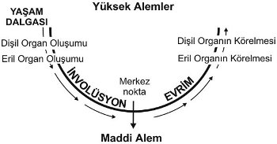

Kutsal Kitap’ın Kısıtlamaları
981) 13. Bölüme kadar İncil, nispeten az referans gösterildi. Fakat şimdi dikkatimizi belli bir süreliğine onun üzerinde yoğunlaştıracağız. Ancak bununla (günümüzde genellikle bilinen biçimde) Tanrı’nın sanki bir tek gerçek ve vahyedilmiş kitabı imiş gibi İncil’in savunulması amaçlanmamıştır. Yine de şu bir gerçektir ki İncil, çok değerli okült bilgiler içermektedir. Bu bilgiler, büyük oranda ana metnin arkasına gizlenmiştir ve sonradan eklenen ve doğruluğu şüpheli olan (“apocryphal”) kısımların metne ilavesiyle karartılmıştır. Kastedilen anlamı bilen okült bilgin, elbette ki hangi parçaların orijinal ve hangilerinin sonradan ekleme olduklarını kolaylıkla görebilir. Ve de birinci bölüm olan Yaratım Bölümü’nü sahip olduğumuz en iyi çeviriyle ele alırsak görürüz ki, bu bölüm, bu eserin ilk kısmında açıklanmış olanla aynı evrim plânını ortaya çıkarmıştır. Ve de ilk kısımda Evreler, Devirler ve Irklar vs’ye ilişkin okült bilgilerle tam uyumludur. Verilmiş olan anahatlar çok kısa ve rafine bilgilerdir ve bir Evre’nin tamamını birkaç kelimeyle ifade etmiştir. Ancak yine de anahatlar vardır.
982) Bir analize başlamadan önce şunu söylemek zorunludur ki, İbrani dilinin kelimeleri, özellikle eski stilden olanları, içiçe geçmişlerdir ve bizim dillerimizde olduğu gibi ayrı değildirler. Buna ek olarak İbranice’de sesli harfler kelimelerde yazılmamaktadırlar[45]. Bu yüzden de metin, okunuşunda sesli harflerin nereye ve nasıl konulacağına çok bağlıdır. İlk anlamı kesin bir şekilde tespit etmenin zorluğunun ne kadar büyük olduğu da gösterilecektir. Ufak bir değişiklik, neredeyse her cümlenin anlamını değiştirebilir.
983) Bu büyük zorluklara ek olarak, İngiltere ve Amerika’da en yaygın olan Kral James versiyonunu yazan 47 İncil çevirmeninden yalnızca üçünün İbranice bilgini olduğunu ve bunlardan ikisinin Mezmurlar çevrilmeden önce öldüğünü gözönüne alalım. Şuna da dikkat edelim ki, çevirmenin çevirisine ancak, o zamanda varolan inançtan sapmadığı veya onu rahatsız etmediği sürece çeviri izni verilmiştir. Bu yüzden, balirttiğimiz kitapta tam bir çeviri şansının aslında çok küçük olduğu açıktır.
984) Almanya’da da koşullar, yukarıda anlatıldığından daha iyi değildi. Zira burada da Martin Luther tek çevirmendi. O bile çevirisini orijinal İbranice’den değil sadece Lâtince’den yapmıştı. Kıta ülkelerindeki Protestanlar tarafından günümüzde kullanılan versiyonların çoğu, Luther çevirisinin farklı dillere tercümelerinden başka bir şey değildir.
985) Metinde sonradan düzeltmeler yapıldığı doğrudur, ancak bunlar metinde büyük iyileştirmeler sağlamamıştır. Bunun dışında Kuzey Amerika’da Kral James versiyonunun İngilizce metninin, sanki İncil orijinalinde İngilizce yazılmış gibi başından sonuna kadar mutlak doğru olduğunda ısrar eden pek çok insan vardır. Yine de hataları yoketmeye yönelik tüm çabalara karşın hatalar hâlâ onun içinde mevcuttur.
986) Ayrıca şunu da not etmek gerekir ki, İncil’i ilk olarak yazmış olanların hakikati, herkesin okuyabileceği ölçüde birtek anlamlı bir şekilde vermek gibi bir amaçları yoktu. “Tanrı’nın açık kitabını” yazmak onlara her şeyden uzaktı. Zohar’ı yazmış olan büyük Okültistler, bu noktaya çok önem veriyorlardı. Aşağıdaki alıntıdan da görülebileceği gibi Torah’ın[46] sırları herkes tarafından anlaşılmamalıydı:
987) “Tora’da (Yasa’da) sadece basit hikâyeleri ve alışıldık sözleri gören insanın vay haline! Çünkü gerçekte böyle olsaydı, Tora’dan çok daha takdire layık bir Tora’yı bugün de oluşturabilirdik. Fakat Tora böyle değildir. Tora’nın her bir kelimesi yüce bir anlam ve büyük bir sır içerir. (...) Tora’nın bildirdikleri onun elbisesidirler. Tora’nın elbisesini Tora’nın kendisi kabul edenin vay haline! (...) Basit kişiler Tora’nın sadece giysisini ve hikâyelerini fark eder. Ve onlar, başka bir şeyi bilmezler. Onlar, giysinin altında ne olduğunu görmezler. Daha bilgili kişi ise giysiye değil, onun altındaki bedene dikkat eder.”
988) Yukarıdaki kelimelerde mecazi anlamlar net bir şekilde belirtilmiştir. Paul da, İbrahim’in hikâyesi ve onun Sara ve Hacer’den olan iki oğlunun tamamen mecaz olduğunu apaçık bir şekilde söylemiştir (Gal 4, 22-26) Birçok pasaj örtülüdür, diğerleri ise kelimesi kelimesine alınması gereken pasajlardır. Ve okült anahtara sahip olmayan hiç kimse, genelde çok çirkin bir örtüde saklanmış olan derin gerçeği bulamaz.
989) Halk yığınlarının okült gerçeklerle ilişki kurmasına izin verildiğinde bu derin sırlarla ilgili olarak sır saklama ve benzetmelerle konuşma, İsa’nın uygulamalarında da görünmektedir. O, sadece Havarilerine derin anlamları gizlice açıklamıştır. Birçok defa da bu sırlarla ilgili olarak konuşmamaları konusunda onları uyarmıştır.
990) Paul’un yöntemleri de bununla uyumludur. O, inançtaki “süt”ü, yani temel öğretileri “bebekler”e vermiş; “et”i, yani daha derin öğretileri ise onları anlamaya ve algılamaya hak kazanmış olanlara saklamıştır.
991) Yahudi Kutsal Kitab’ı (Eski Ahit) aslında İbranice olarak yazılmıştır, fakat bugün bu ilk yazılardan bir satıra bile sahip değiliz. M.Ö. 280 yıllarında bilinen en eski Yunanca çeviri olan Septuagint meydana getirildi. İsa’nın zamanında bile neyin orijinal, neyin sonradan ekleme sayılması gerektiği konusunda çok büyük karışıklık ve görüş ayrılığı vardı.
992) Ancak Babil sürgününden dönüşten sonra yazıcılar, ilk defa farklı yazıları biraraya getirmeye başladılar. Talmud ilk defa M.S. 500 yılında ortaya çıktı. Bu kitap, şimdikine benzeyen bir metin içeriyordu. Ancak o, yukarıdaki olgulardan ötürü mükemmel olamadı.
993) Bundan sonra Talmud, M.S. 590’dan 800’e kadar süren bir dönemde özellikle Tiberias’da gelişen Masorete okulu tarafından ele alındı. Büyük ve yorucu bir çalışmayla bizim şu anda sahip olduğumuz orijinal metne en yakın İbranice bir Eski Ahit meydana getirildi.
994) Bu masoterik metin, Yaratım’ın[47] (Genesis) aşağıdaki açıklamasında kullanılacaktır ve sadece bir tek çevirmenin eserine bağlı kalınmaksızın üç seçkin ibrani bilgin olan H. Arnheim, M. Sachs, Jul. Fürst ve bunlarla işbirliği içinde çalışmış olan Dr. Zunz’un birlikte meydana getirdiği Almanca çeviriden de yararlanılacaktır.
Başlangıçta
995) Daha önce de belirtildiği gibi İbranice metnin anlamı, sesli harflerin farklı biçimlerde metne konmasına ve cümlede kelimelerin ayırılmasına göre tamamen değişebilmektedir. İncil’deki Yaratım (Genesis) bölümünün birinci cümlesi buna çok iyi bir örnektir.
996) Bu cümlenin bilinen iki farklı okunma şekli vardır. Birisi: “Başlangıçta Tanrı, gökleri ve yeri yarattı”. Diğer anlam ise: “İkiz enerji, (uzayda) daima varolan öz’den, ikiz göğü biçimlendirdi”.
997) Bu iki anlamdan hangisinin doğru olduğu hakkında çok şey söylendi ve yazıldı. Buradaki zorluk, insanların sabit ve belirli bir şey istemelerinden kaynaklanmaktadır. Onlar, bir açıklama doğru ise diğer tüm açıklamaların yanlış olması gerektiği gibi bir bakış açısına sahiptirler. Fakat bu kesinlikle insanı, çok taraflı ve çok düzeyli olan hakikate götüren yol değildir. Her okült gerçeğin farklı bakış açılarından incelenmesi gerekir. Her bir bakış açısı gerçeğin belli bir evresini sunar. İncelenen konuyu tam ve kesin olarak idrak edebilmek için onların hepsi gereklidir.
998) Bu cümlenin ve Tevrat’taki başka birçok cümlenin birden fazla anlama sahip olabilmesi olgusu bile inisiye olmamış kişi için kafa karıştırıcıdır. Fakat bu olgu, anahtara sahip olanlar için, Tevrat’ın vahyi ile dolmuş olan mucizevi Zekâ’ların aşkın bilgeliğinin bir kanıtı olarak aydınlatıcıdır. Sesli harfler onun içine konulmuş olsalar ve kelimeler birbirlerinden ayrılmış olsalardı, Tevrat’ı okumanın sadece tek bir yolu olacaktı ve bu görkemli ve yüce sırlar onların ardında gizlenmiş olamayacaklardı. Böyle bir üslup, eğer onu yazanlar Tanrı’nın “açık” kitabını yazmayı amaçlamış olsalardı uygun bir yöntem olabilirdi. Fakat onların amaçları bu değildi. Bu kitap sadece inisiye kişiler için yazıldı ve ancak sadece onlar tarafından kavranarak okunabilir. Anlamı tek ve açık bir kitap yazmak, anlamı gizli bir kitap yazmaktan çok daha basit olurdu. Hiçbir çaba harcanmazdı, ancak zamanı geldiğinde sadece onu hakedenlere bilgi vermek ve haketmeyenlere de gerçeği saklı tutmak mümkün olmazdı.
Nebula Teorisi
999) Güneş Sistemimizin yaratımı ve evriminin ışığı altında incelendiğinde, Yaratım Kitabı’ndaki başlangıç cümlesinin her iki anlamının da konunun anlaşılması için gerekli olduğu görülür. Bu anlamlardan ilki bize, evrimimizin bir başlangıcı olduğunu ve bu başlangıçta göklerin yaratıldığını söyler; diğer anlam da göklerin ve yerin, materyalistlerin alaycı bir şekilde dikkat çektikleri gibi yoktan değil de “hep varolan bir özden (essence)” yaratıldığını ekleyerek birinci anlamı tamamlar. Kozmik Kök-madde biraraya toplandı ve harekete geçirildi. Dönen kitlenin ataleti sonucu oluşan halkalar, merkezdeki parçadan ayrıldılar ve modern bilimadamının olağanüstü zekasıyla ortaya çıkardığı gibi gezegenleri vs oluşturdular. Okült ilim ve modern bilim, işleyiş yöntemi bakımından tam bir uyum içerisindedirler. Şimdi gösterileceği gibi bu tespitlerde iki teorinin uyum içinde olmadığını gösteren hiçbir şey yoktur. Okült ilim der ki, Tanrı oluşum sürecine ilk hareketi vermiştir ve sistemi sürekli olarak belli bir yolda götürmektedir. Modern bilimadamı aptalca gördüğü bu fikri reddeder ve Tanrı’yı bunun için kabul etmenin gerekli olmadığını ispatlamak için içi su dolu bir kap alır. Bu kaptaki suya biraz yağ döker. Su ve yağ, mekânı ve alev bulutunu simgelemektedir. Sonra da yağı, bir iğne vasıtasıyla daireler çizerek döndürmeye başlar. Yağ, küre biçimli bir form alır ve bunun Merkezi Güneş olduğunu söyler. Yağ küresini çevirmeyi hızlandırdığında küre, Ekvator’dan bölünür ve kendisinden dışarıya halka biçiminde bir yağ parçası atar. Bu halka parçalanır, parçalar birleşmeye başlarlar ve tıpkı Güneş’in etrafında dönen bir gezegen gibi merkezi yağ parçasının etrafında dönen daha küçük bir küre oluştururlar. Sonra da acıma dolu bir bakışla okült bilgine sorar: “Ne olduğunu görmüyor musunuz? Bunu yapmak için Tanrı’nıza ya da doğaüstü herhangi bir güce gerek yok!”
1000) Okült kişi, bir Güneş Sisteminin buna benzer bir şekilde oluşabileceğini kolayca kabul eder. Fakat şuna da çok şaşırmıştır ki, Kozmik güçlerin çalışmasını bu kadar kesinlikle bilecek kadar açık bir sezgiye ve bu muazzam teorinin dahice bir örneğini gösterecek derecede akla sahip olan bir kişi, aynı zamanda, verdiği örnekte kendisinin Tanrı rolünü oynadığını görmemektedir. Öylece bırakılsaydı sonsuza dek atıl ve şekilsiz kalacak olan yağı, suyun içine döken onun gücüdür. Yağın, Güneş’i ve gezegenleri simgelediği şekle dönüşmesine neden olan da odur. Bir Güneş Sistemi oluşturmak için Kozmik madde üzerinde çalışan ve Üçte Tek Olan (Triune) Tanrı’yı mucizevi bir şekilde Yağ, su ve güç kullanarak anlatan bu deneyi oluşturma fikri de onundur.
1001) Tanrı’nın özellikleri, İrade, Bilgelik (Hikmet) ve Faaliyet’tir (Şekil 6’ya bakınız ve burada “Tanrı” isminin bu terminolojide ne anlama geldiğine dikkat ediniz). Bilimadamının, deneyi yapma İradesi vardır. Onun ustalığı, deneyi tamamlamak için izlenmesi gereken yolu ve olması gereken gereçleri bulur. Bu ustalık, Tanrı’nın ikinci özelliği olan Bilgeliğe denk gelir. Eylemi gerçekleştirebilmek için onun aynı zamanda kas gücüne de ihtiyacı vardır, bu da Tanrı’nın üçüncü özelliği olan Faaliyet’e denk gelir.
1002) Dahası evren, bir kere harekete geçirildiğinde herhangi bir iç sebep ve yol gösterici güç olmaksızın kendi kendine sürekli çalışan muazzam bir hareket-makinesi değildir. Bu aynı zamanda bilimadamının deneyinde de ispatlanmıştır ki, yağ topunun döndürülmesi bırakıldığı anda minyatür gezegenlerin hareketi de aynı şekilde durmakta ve her şey tekrar, suda yüzen şekilsiz bir kütleye dönüşmektedir. Eğer Tanrı da aynı şekilde her şeyi saran ilgisini ve yaşatıcı faaliyetini bir an durdurursa Evren bir anda “ince uzayda” çözülüp gider.
1003) Yaratımın ikinci anlamı, biçimlendirici ikiz enerji tanımıyla dikkate değerdir. Bu anlam Tanrı’nın üçte tek olduğunu (triune) belirgin bir biçimde vurgulamaz. O, okuyucunun bu bilgiye sahip olduğunu kabul eder. Ve de bir evrenin biçimlendirilmesinde yalnızca iki gücün etkin olduğunu söyleyerek kesin hakikati belirtir.
1004) Üçte Tek Olan Tanrı’nın birinci görünümü (aspect), yaratım için İrade’yi ortaya koyduğunda bu, gelecekteki evren için bir plan tasarlamak amacıyla ikinci görünüm olan Bilgeliği uyandırır. Bu ilk tezahür gücü Hayalgücü’dür (imagination). Bu birincil Yaratım Gücü bir evren Fikrini tasarladığında üçüncü görünüm olan Faaliyet, Kozmik madde üzerinde çalışarak Hareket’i meydana getirir. Bu, Gücün ikinci tezahürüdür. Ancak tek başına Hareket yeterli değildir. Bir âlemler sistemi oluşturmak için bu, düzenli bir hareket olmalıdır. Bu yüzden belli sonuçlar elde etmek amacıyla Hareketi zeka ile yönetmek için Bilgelik gereklidir.
1005) Böylelikle Yaratım’ın ilk cümlesinde şu anlamı buluruz: Başlangıçta Kozmik Kök-maddedeki düzenli ve ritmik hareket, evreni biçimlendirdi.
Yaratıcı Hiyerarşiler
1006) Açılış cümlesinin ikinci yorumu, ikiz enerjiden bahsederek bize aynı zamanda Tanrı hakkında daha yetkin bir fikir verir. Bu ilk cümle, Tanrı’nın Bir Rûhu’nun, tezahürü sırasındaki pozitif ve negatif taraflarına işaret eder. Okült ilim öğretisiyle uyumlu olarak burada Tanrı, birleşik bir Varlık olarak gösterilir. Bu fikir, aynı bölümdeki diğer ayetlerde de vurgulanır.
1007) Bizim evrimimizde gönüllü olarak çalışmış olan Yaratıcı Hiyerarşilere ek olarak bizim evrimimize ait olan ve Tanrı ile birlikte evrenin inşasında çalışan yedi Hiyerarşi daha vardır. Yaratım’ın ilk cümlesinde bu Hiyerarşiler “Elohim” olarak adlandırılırlar. Bu isim, ikiz ve çift cinsiyetli bir Varlık grubunu ifade eder. Kelimenin birinci kısmı “Eloh”dur ve bu, dişil bir isimdir. Kelimenin sonundaki “h”, cinsiyeti belirtir. Sadece bir tek dişi Varlık kastediliyor olsaydı, “Eloh” kelimesinin kullanılması gerekirdi. Dişil çoğul takısı “oth”dur. Eğer dişi cinsiyete sahip bir dizi Tanrıça’dan bahsediliyor olsaydı o zaman da kullanılması gereken kelime “Elooth” olmalıydı. Bu formların yerine dişil isim olan “Eloh”a eklenmiş olan eril çoğul takısını görmekteyiz. Elohim, bir dizi eril ve dişil, yani çift cinsiyetli varlığı tanımlamaktadır. Onlar, ikiz bir yapıya sahip olan pozitif-negatif yaratıcı enerjinin ifadesidirler.
1008) Bölümün sonraki kısmında yine Yaratıcıların çoğulluğuna işaret edilir. Şu sözler Elohim’e atfedilmektedir: “İnsanı kendi suretimize benzer yapalım”. Bundan sonra da çelişkili biçimde eklenir: “O onları erkek ve dişi olarak yarattı”.
1009) Çevirmenler burada (kesinlikle sadece çoğul bir kelime değil, hem erkek ve hem de dişi bir kelime olan) kafa karıştırıcı Elohim’i cinsiyetsiz tekil kelime olan “Tanrı” ile aynı anlamlı kabul ettiler. Eğer anlamı bilselerdi bile, bu anlamı yazabilirler miydi? Varolan fikirleri rahatsız etmek onlara yasaktı. Kral James ne pahasına olursa olsun gerçeği değil barışı istedi ve onun tek derdi, krallığında bir rahatsızlık yaratabilecek herhangi bir tartışmadan kaçınmaktı.
1010) İnsanın yaratımı anlatılırken çoğul olan “onlar” kelimesi de kullanılır ve bununla insan türü olan ADM’nin yaratımının kastedildiği açıktır, yoksa bir birey olan Âdem kastedilmemiştir.
1011) (Alev’in Efendileri, Kerrubim, Seraphim ve özgürleşmiş olan iki isimsiz Hiyerarşi ile birlikte) altı yaratıcı Hiyerarşinin bâkir ruhlara yardım ettiklerini gösterdik. Bu bâkir ruhların kendileri de yedinci bir Hiyerarşi oluştururlar.
1012) Kerrubim ve Seraphim’in Form’un yaratımıyla ilgileri yoktu, bu yüzden yaratımın Form tarafının anlatıldığı önceki bölümde onlardan bahsedilmedi. Burada yalnızca insana, yoğun bir fizik Form edindiği noktaya kadar rehberlik eden yedi Yaratıcı Hiyerarşiden bahsedilmiştir. Böylece onun ruhu, bu fizik Form’un içinde ve onun aracılığıyla çalışabilecekti.
1013) Yaratım işinin her kısmının açıklanmasından sonra şöyle söylenir: “ve Elohim bunun iyi olduğunu gördü”. Bu ifade yedi defa söylenir, son söylenişi ise altıncı günde insan Formu’nun yaratılmasından sonradır.
1014) Yedinci günde “Elohim’in dinlendiği” söylenmiştir. Bu, bizim okült öğretilerimizin şimdiki Evre’ye kadar olan evrim çalışmasında Yaratıcı Hiyerarşilerden her birinin üzerine aldığı kısımla tam uyum içindedir. Yine öğretilmektedir ki, şimdiki Çağımızda Tanrılar ve yaratıcı Hiyerarşiler insanın, kendi kurtuluşuna çalışabilmesi için aktif katılımdan çekilmişler ve de sıradan insanlık için gerekli olan yol göstermeyi de şu anda insan ile Tanrılar arasında aracı olan “Büyük Biraderler”e bırakmışlardır.
Satürn Evresi
1015) Okült ilmin açıkladığı, Güneş Sistemimizin başlangıcı ve yaratıcı Hiyerarşilerin çalışmasının İncil öğretileriyle uyumlu olduğuna ikna olduktan sonra şimdi de İncil’in farklı “yaratım günleri” hakkındaki açıklamasını inceleyelim ve de bu günlerin, Satürn, Güneş, Ay Evreleri ile Yer Evresi’nin üç buçuk Devri ve Kutup, Uzak-kuzey (Hyperborean), Lemurya ve Atlantis Çağları ile nasıl uyumlu olduklarını görelim.
1016) Doğal olarak Yaratım’ın ilk bölümünde olduğu gibi birkaç satırda detaylı bir tarif verilememiştir. Fakat ana noktalar düzenli bir sırada bulunmaktadırlar ve Yaratım için bir cebir formülüne çok benzerler.
1017) (İngilizce Kral James çevirisinde) ikinci âyet şöyledir: “Yer boş ve ıssızdı. Derinliğin yüzü karanlıkla kaplıydı; ve Elohim’in ruhları derinliğin üzerinde yüzüyordu”. Tezâhür’ün başlangıcında şimdiki Yer, Satürn Evresi’nde bulunuyordu. Onda, bu Evre’yi anlatırken belirttiğimiz koşullar hüküm sürüyordu. Yer, Kral James çevirisinde belirtildiği gibi “Formsuz ve boş” değildi. O, çok sıcaktı ve bu yüzden belli bir bölgeye sınırlanmıştı ve soğuk olan uzayın derinliklerinden ayrılmıştı. Onun karanlık olduğu doğrudur, fakat o, hem karanlık ve hem de sıcak olabilir. Çünkü “karanlık” ısı muhakkak ki parlak ya da görünür ısıdan önce gelir. Satürn Evresi’ndeki bu karanlık Yer’in üzerinde yaratıcı Hiyerarşiler yüzüyordu. Onlar dışarıdan onun üzerinde çalıştılar ve yeri biçimlendirdiler. İncil onları, “Elohim’in Ruhları” olarak adlandırır.
Güneş Evresi
1018) Güneş Evresi üçüncü âyette iyice anlatılmıştır: “Ve Elohim konuştu: “Işık olsun, ve Işık oldu”. Burası ile en gülünç zırva diye alay edildi. Küçümseyici bir edayla, ‘Güneş ancak dördüncü Günde yaratılmışken nasıl ışık olabildi’ diye soruldu. Ancak İncil’deki anlatıcı yalnızca Yer’den bahsetmemektedir. O, merkezi “ateş bulutsu”sundan bahsetmektedir. Ki bu “ateş bulutsu”sundan Güneş sistemimizin Yer de dahil tüm gezegenleri oluşmuştur. Böylece bulutsu, Güneş Evresi’nde olduğu gibi yanan ısı durumuna ulaştığında dışarıdan aydınlatma zorunluluğu ortadan kalktı, çünkü ışık artık içerideydi.
1019) Dördüncü âyette şunu okuruz: “Elohim ışıkla karanlığı birbirinden ayırdı”. Elbette yanan bulutsunun bulunduğu Güneş Evresi’ndekinin aksine dış uzay karanlıktı.
Ay Evresi
1020) Ay Evresi altıncı âyette şöyle tarif edilir (Kral James çevirisi): “Ve Elohim dedi, suyu sudan ayırmak için bir kubbe olsun”. Bu cümle tam olarak Ay Evresi’ndeki durumu tarif etmektedir. Bu Evre’de parlayan ateş bulutsusunun (fire nebula) sıcaklığı ve dış uzayın soğukluğu, ateş çekirdeğin etrafında bir su kütlesi oluşturmuştur. Ateş ve Suyun teması, genleşmiş su olan ve âyetimizde de belirtilen buharı üretti. Bu buhar, dışarı akan buhar akımı sebebiyle sürekli olarak sıcak, alevli çekirdeğe doğru çekilen ve buhara göre daha soğuk olan sudan farklıydı. Böylece havada asılı gibi duran bir kütlenin oluşmasına yolaçan kesintisiz bir su dolaşımı meydana geldi. Genleşme ile bir gök veya bir kubbe ya da “alev sisi”nden bir atmosfer meydana geldi. Buhar ateşli çekirdekten dışarı kaçarken dış uzayla temas sonucu yoğunlaşıyor ve tekrar ısınmak üzere çekirdeğe geri dönüyordu. Bu böyle döngüsel olarak devam ediyordu. Böylece İncil’de belirtildiği gibi iki çeşit su ve aralarında bir ayrım vardı. Yoğun su, ateş çekirdeğe daha yakındı ve genleşmiş su ya da buhar daha dıştaydı.
1021) Bu aynı zamanda modern zamanların bilimsel teorisi ile de uyuşmaktadır. Önce karanlık ısı, sonra yanan bulutsu ve daha sonra da dışta nem, içte sıcaklık; en sonunda da kabuk bağlama.
Yer Evresi
1022) Bundan sonra da Yer Evresi tarif edilmiştir. Ancak bu tarife bakmadan önce biraz tekrarlamalarla (recapitulation) ilgilenmemiz gerekiyor. Aktardığımız âyetler ve verdiğimiz açıklamalar aynı zamanda tekrarlama Devirlerle de uyuşmaktadır. Bu yüzden Satürn Evresi’ne ilişkin olarak söylenen koşullar aynı zamanda, herhangi bir Dinlenme Evresi’nden çıkan Sistemin koşullarıdır. Satürn, Güneş ve Ay Evreleri ile ilgili açıklamalar bu yüzden şimdiki Yer Evremizin ilk üç Devri için de geçerli olacaktır.
1023) Dokuzuncu âyette şunu okuruz: “Ve Elohim dedi, sular kuru topraktan ayrılsın, (...) ve Elohim kuru alana Yer adını verdi”. Bu, ilk katı kabuk bağlamayı ifade etmektedir. Sıcaklık ve nem şimdiki Dünya’mızın katı bedenini meydana getirmişlerdir.
1024) Kutup Çağı. Yer Evresi’nin Dördüncü Devrini anlatan (ki bu Evre’nin asıl çalışması dördüncü devirde başlamıştır) dokuzuncu âyet aynı zamanda Maden Krallığının oluşumunu ve Kutup Çağı’ndaki insanın maden aşamasında bunu tekrarlamasını anlatmaktadır. Her Çağ aynı zamanda önceki aşamanın bir tekrarıdır. Tıpkı Küre’lerin, Devir’lerin ve Evre’lerin herbirinin tekrarı olduğu gibi, her Küre’de geçmiş her şeyin tekrarı da vardır. Bu Tekrarlamalar sonsuzdur. Her zaman bir spiral içinde başka bir spiral vardır, atomda, Küre’de ve evrimin diğer bütün aşamalarında.
1025) İlk başta karmaşık ve şaşırtıcı görünseler de aslında anlaşılmaları o kadar zor değildir. Tümünü kapsayan düzenli bir şema vardır ve kişi zamanla bu şemanın çalışmasını kavrayıp, tıpkı labirentteki bir izi takip eder gibi onu takip edebilir. Benzerlik (analogy), evrimi anlamadaki en iyi yardımcılardan biridir.
1026) Uzak-kuzey Çağ, 11 ila 19. âyetler arasında dördüncü Gün’ün işleri olarak anlatılmıştır. Bu âyetlerde Elohim’in Bitki Krallığını, Güneş’i, Ay’ı ve yıldızları yarattığı kaydedilmektedir.
1027) İncil, bitkilerin madenlerden sonra geldiği konusunda modern bilimle uyuşmaktadır. İki öğreti arasındaki fark, Yer’in merkez kütle’den atıldığı zamandır. Bilim bu olayın, maden ve bitki olarak adlandırılabilecek herhangi bir kabuğun oluşumundan önce olduğunu iddia eder. Eğer günümüzdeki maden ve bitkileri kastediyorsak bu iddia doğrudur. Orada yoğun bir madde yoktu, fakat merkezi Güneşte meydana gelen ilk kabuk oluşumu madenseldi. İncil anlatıcısı yalnızca en temel olayları vermektedir. Merkezi kitleden kopartılıp atıldığında bir yüzük formunu aldığı, sonra parçalandığı ve en sonunda da parçaların küre şeklinde eridiği İncil’de anlatılmamaktadır. Yer kadar küçük bir kütlede yeniden kristalleşme süresi, tarihçinin anmasına değmeyecek kadar kısaydı. Ay, Yer’den atıldığında ikinci bir kez daha meydana gelen ve ikincil bir olay olan erime işleminden de İncil anlatıcısı bahsetmemektedir. Muhtemelen o, okült bilgi edinmeyi hakeden bir kişinin bu gibi küçük detayları bildiğini kabul etmiştir.
1028) Merkezi ateş kütlesinin kabuk bağladığı zamanda bitkiler henüz eterikti. Bu yüzden erime işlemi onları yoketmedi. Yer kristalleştiğinde güç çizgileri (ki suda bulundukları hatlar boyunca buz kristalleri oluşur) üzerindeki hatlar boyunca bitki formları oluştu. Bu Formlar, yoğun maddeyi üzerlerine çekerek günümüz bitki bedenlerini ve Yerkürenin katmanları içine gömülmüş olan geçmiş bitki bedenlerini oluşturdular.
1029) Yer’in Güneş’ten ve Ay’dan ayrılmasından sonra Yer’e dışarıdan gelen sıcaklık, bu eterik bitki-formlarının daha da gelişmesine yardım etti. Bu sıcaklık, daha da yoğun maddeleri kendilerine çekebilmeleri için onlara yaşam enerjisini verdi.
1030) Lemurya Çağı beşinci günün işi olarak anlatılmaktadır. Bu üçüncü Çağ, bir anlamda Ay Evresi’nin bir tekrarıdır. Ve İncil’in öyküsünde Ay Evresi’nde bahsedilmiş olan su, ateş bulutsusu ve hareket eden ve nefes alan Yaşam’ın ilk çabaları yeralır.
1031) 20. ve 21. ayetler bize şöyle der: “Elohim dedi, Su’da canlı varlıklar oluşsun, (...) ve kuşlar (...) ; ve Elohim hem suda hem de karada yaşayabilen büyük varlıkları (amphibian), türlerine göre tüm canlıları ve kanatlı tüm kuşları yarattı.”
1032) Bu aynı zamanda maddi bilimin, hem suda hem de karada yaşayabilen büyük varlıkların kuşlardan önce geldiğini belirten öğretisiyle uyuşmaktadır.
1033) Öğrencinin özellikle şuna dikkat etmesi istenmektedir ki, oluşturulan şeyler yaşam değildiler. Fakat bu, yaşamın yaratıldığı anlamına gelmez, aksine nefes alan veya yaşamı soluyan “şeyler” yaratılmıştır... İbranice’de soluk almak anlamında kullanılan kelime nefeş’tir (arapça nefes). Bu kelime dikkatle not edilmelidir, çünkü onunla daha sonra başka bir biçimde tekrar karşılaşacağız.
1034) Altıncı günde Atlantis Çağı’ndan bahsedilir. 24. ayette memelilerin yaratımı anılır. Ve burada ‘nefeş’ kelimesi, memelilerin “yaşamı soluduğu” açıklamasıyla geçer. “Elohim dedi; Yer, yaşam soluyan varlıklar meydana getirsin (...) memeliler (...)” ve 27. ayette “Elohim insanı kendi suretinde yarattılar; onu erkek ve dişi yaptılar.”
1035) İncil tarihçisi burada cinsiyetsiz ve çift cinsiyetli (hermafrodit) insan aşamalarını atlamakta ve doğrudan onun şimdi bildiğimiz iki ayrı cinsiyetli aşamasına geçmektedir. O, bunu yapmak zorundaydı çünkü Atlantis Çağı’nı betimliyordu. O zamanda ne cinsiyetsiz insanlar ve ne de çift cinsiyetli insanlar vardı. Çünkü cinsiyetlerin ayrımı daha önce Lemurya Çağı’nda meydana gelmişti. Daha sonra insan olacak olan varlığı, gelişiminin daha önceki evrelerinde insan olarak adlandırmak zordu, çünkü hayvanlardan çok az farkı vardı. Bu yüzden İncil anlatıcısı, insanın Atlantis Çağı’nda oluşturulduğunu belirttiğinde onun gerçekleri zorlamış olduğu söylenemez.
1036) (Tüm çevirilerde) 28. ayette çok büyük anlama sahip olan küçük bir önekle karşılaşırız: “Elohim dedi, verimli OLUN ve Yer’i TEKRAR doldurun.” Bu açıkça göstermektedir ki, bunu yazan kişi burada, yani Yer Evresi’nin D Küresi’nde bulunan yaşam dalgasının önceki Devirlerde önceden geliştiğini bildiren okült öğretiden haberdardı.
1037) Âri Çağı, Yaratım’ın yedinci gününe denk gelmektedir. Bu günde Elohim, Yaratıcılık ve Liderlik işlerinden sonra dinlenmişler ve insanlık, bağımsız bir döneme başlamıştır.
1038) Bu, Formların yaratıldığı hikâye sunumunu sonlandırır. Önümüzdeki bölümde aynı hikâyeyi, daha çok Yaşam tarafıyla ilgilenen bir bakış açısından ele alacağız.
Yehova ve Misyonu
1039) 1. bölümdeki Yaratılış hikâyesi ile 2. bölümün 4. âyetiyle başlayan kısım arasındaki çelişki ve özellikle de bunların yazarları hakkında birçok ilmi tartışma meydana gelmiştir. Bu iki bölümün farklı kişiler tarafından yazıldığı tespit edilmiştir. Çünkü çevirmenlerin birinci ve ikinci bölümde diğer dillere “Tanrı” olarak tercüme ettiği Varlık ya da Varlıklar, İbranice metnin birinci bölümünde “Elohim”, ikinci bölümde de “Yehova” olarak adlandırılmışlardır. Bunun için aynı yazarın Tanrı kelimesi için iki farklı sözcük kullanmayacağı savunulmuştur.
1040) Yazar her iki durumda da aynı Tanrı’yı kastetmiş olsaydı bile, muhtemelen yine farklı sözcükler kullanacaktı. Fakat o Tektanrıcı (Monotheist) değildi. O herhâlde Tanrı’yı basitçe, göğü taht ve yeri de ayak iskemlesi olarak kullanan üstün bir insan olarak düşünemeyeceğini biliyordu. Yehova hakkında yazarken de, Yaratım işinin özel bir kısmının sorumluluğu kendisine verilmiş ve belirtilen bölümde anlatılmış olan Lideri kastediyordu. Yehova, Elohim’den biriydi ve halen de onlardan biridir. O, Ay Evresi’nde insan olan Meleklerin Lideriydi ve bizim Ay’ımızın Hükümdarıdır. Yehova’nın konumunu ve bileşimini daha iyi anlamak için okuyucu Şekil 14’e başvurmalıdır.
1041) O, bizim Ay’ımızın Hükümdarı olarak oradaki yozlaşmış kötü varlıkları kontrol etmekte ve melekleri de yönetmektedir. O’nunla birlikte Güneş Evresi’nin insanlığı olan Yüce Melekler’den bazıları da bulunmaktadır. Bunlar, “Irk Ruhları”dırlar.
1042) Yehova’nın işi, katılaştırıcı, kristalleştirici Ay güçleri aracılığıyla somut beden veya formlar yaratmaktır. Bu yüzden O, insana çocukları verendir ve bu işte Melekler, O’nun elçileridirler. Fizyologlar, hamilelikle Ay arasında çok yakın bir ilişki olduğunu çok iyi bilirler ve en azından Ay’ın, rahim içindeki yaşam evresini ve diğer fizyolojik faaliyetleri yönettiğini gözlemlemişlerdir.
1043) Yüce Melekler’in, bir Irk’ın Ruhları ve Liderleri olarak, o ırkın evrim koşullarına göre bir halkla birlikte, ya da bir halka karşı savaştıkları bilinmektedir. Daniel 10. Bölüm 20. âyette Yüce Melek Daniel’e şöyle der: “Şimdi dönüp Pers önderiyle savaşacağım, ben gidince Yunan Önderi gelecek”.
1044) Yüce Melek Mikail (Michael), Yahudilerin Irk-ruhudur (Daniel 12:1). Fakat Yehova yalnızca Yahudilerin Tanrısı değildir. O, Hristiyanlığa giden tüm Irk-dinlerinin kurucusudur. Yine de O’nun, şimdiki yozlaşmış Yahudilerin ataları ve Âri Çağı’nın yedi ırkı için “tohum-ırk” olan İlk Samiler’e özel bir ilgi gösterdiği doğrudur. Yehova elbette ki, yeni bir Çağ insanlığının temel yetilerini içlerine aşılayacağı tohum-ırka özel bir önem vermiştir. Bu nedenden dolayı O, İlk Samilerle özel olarak ilgilenmiştir. Onlar O’nun “seçilmiş halkı” idiler. Bu halk, yeni bir ırkın tohumu olmak üzere seçilmişti ve “Vaad edilmiş Topraklar”ı miras olarak alacaklardı. Bu topraklar, yalnızca önemsiz Filistin’den ibaret değildi ve şimdiki tüm Dünya idi.
1045) Yehova onları Mısır’dan çıkarmadı. Bu hikâye onların torunları arasında ortaya çıktı. Bu hikâye aslında onların, sellere ve felaketlere mahkum edilmiş olan Atlantis’ten “çöle” (Orta Asya’daki Gobi Çölü) doğru kaçışlarının ve Vaadedilmiş Ülkeye girebilmeden önce çölde kabalistik kırk yıl boyunca dolaşmalarının hikâyesidir. Bu hususta “vaat edilmiş” kelimesinde özel bir ikili anlam bulunmaktadır. Bu ülke, “vaat edilmiş” olarak adlandırılmıştır, çünkü “seçilmiş halk” “çöle” götürüldüğünde yerleşim yeri olarak böyle bir yer yoktu. Yerin bir kısmı seller tarafından yutuldu, diğer kısımları da volkanik patlamalar tarafından değişikliğe uğratıldı. Yeni Yer’in Âri ırkına yurt olacak şekilde uygun koşullara sahip olması için belli bir sürenin geçmesi gerekiyordu.
1046) İlk Samiler, izole edilmişlerdi ve diğer boylarla ya da halklarla evlenmeleri yasaklanmıştı. Ancak onlar inatçı ve zor bir halktılar. Hemen hemen tamamı arzu ve kurnazlık tarafından yönetiliyorlardı ve bu yüzden emre itaatsizlik ettiler. Onların Kutsal Kitapları, Tanrı’nın oğullarının insan kızlarıyla evlendiklerini bildirir. Burada bahsedilen insan kızları, Atlantisten düşük dereceli halklardır. Böylelikle onlar, Yehova’nın amaçlarını boşa çıkardılar ve reddedildiler. Çünkü böyle melez birleşmelerin meyveleri, gelecek Irk için tohum olarak kullanılamazdı.
1047) Bu melez birleşmelerin meyveleri, “kayıp boylar”dan bahseden şimdiki Yahudilerin atalarıdır. Onlar, ilk sayıdan bazılarının kendilerini terk ettiklerini ve başka bir yoldan gittiklerini bilirler. Fakat bu az sayının sadık kaldıklarını bilmezler. On kayıp boy hikâyesi bir masaldır. Onların çoğu yokoldular, ancak sâdık olanlar kurtulmuşlar ve bu sâdık kalanlardan da şimdiki Âri ırkı meydana gelmiştir.
1048) İncil karşıtlarının, İncil’in orijinal yazılarının bozulmuş olduğu iddiasına okült ilim de seve seve katılır. Ve hatta itiraf eder ki onun bazı bölümleri tamamen sahtedir. Ayrıca onun şu anda sahip olduğumuz biçimiyle tüm olarak gerçek olduğunu ispatlamak için hiçbir çalışma yapılmamıştır. Şimdiki çaba sadece, çeşitli çevirmen ve denetçiler tarafından şaşırtıcı derecede çok, saptırıcı ve yanlış yorum yığınlarının içine gömülmüş olan birkaç okült hakikat cevherini bulundukları yerden çıkarmaya çalışmaktır.
Bozunum (Involution), Evrim (Evolution) ve Hücreden Yaratım (Epigenesis)
1049) Önceki paragraflarda Yehova’nın kimliğini ve gönderilişini genel yanılgıdan kurtararak açıkladıktan sonra şimdi, Yaratım’ın, insanın yaratılışını anlatan ve birbirleriyle çelişkili gibi görünen birinci ve ikinci bölümlerinin birbiriyle uyum içinde olduklarını göstermeye çalışabiliriz. Birinci bölümde insanın tüm yaşayan varlıklar içinde en son yaratılan olduğu, ikinci bölümde de ilk yaratılan olduğu yeralmaktadır.
1050) Şunu dikkate alalım ki, ilk bölüm temel olarak Form’un yaratılmasını ele alır. İkinci bölüm ise Yaşam’ın incelenmesine ayrılmıştır. Beşinci bölüm de Bilinç ile ilgilenir. Anlamın kavranmasının anahtarı, fizik Form ile bu Formu kendi ifadesi için inşa eden Yaşam’ı ayırt etmektir. İkinci bölümde diğer krallıkların yaratılış sırası, ilk bölümdeki kadar doğru verilmemiş olsa da insanı, Yaşam açısından dikkate alırsak o, ilk olarak yaratılmıştır. Fakat onu, birinci bölümde olduğu gibi Form açısından ele aldığımızda o, en son yaratılmıştır.
1051) Tüm evrimin seyri boyunca - Evre’ler, Küre’ler, Devir’ler ve Irklar boyunca- yeni özelliklerin oluşmasıyla daha iyi hale gelemeyenler, geri kalmışlardır ve hemen yozlaşmaya başlamışlardır. Yalnızca genişleyen bilincin kendisini ifadesi için uygun olan yeni Formlara girmede uysal ve esnek olup, yeni koşullara uyum sağlayabilenler kalmışlardır. Sadece, içine girdiği Formlarda varolan büyüme olasılıklarını değerlendirebilen Yaşam, herhangi bir yaşam dalgasının Öncüleriyle birlikte gelişebilir. Tüm diğerleri Geride Kalanlar’dan olmak zorunda kalırlar.
1052) Bu, okült öğretinin özüdür. İlerleme, basitçe açılım; basitçe Bozunum ve Evrim demek değildir. Burada bir üçlü oluşturacak şekilde bir üçüncü faktör daha vardır: Hücreden Yaratım (Epigenesis).
1053) İlk iki kelime, Yaşam ve Form üzerinde çalışmış herkesin bildiği kelimelerdir. Genel olarak bilinir ki, Ruhun maddeye doğru bozunumu meydana gelmiştir ki, Form inşa edilebilsin. Çok az bilinen ise şudur: Ruhun bozunumu, Form’un Evrimiyle birlikte yan yana gider.
1054) Satürn Evresi’nin en başından Atlantis Çağı’ndaki zamana kadar, Lüsifer ruhları aracılığıyla “insanın gözleri açıldığında” bu gözler, insanın – ya da insan olmuş yaşam gücünün – faaliyetlerinin bir sonucu olarak temelde içe dönüktü. Onun demiryolları, buharlı gemiler vs yapmak için şimdi dışarıya yolladığı bu güç, bir araç yapmak üzere içte kullanıldı. O, bu araç sayesinde kendisini ifade edecekti. Bu araç da, onu inşa eden ruh gibi üçüzdür.
1055) Şu anda kendisiyle insanın dış koşulları iyileştirmekte olduğu güç, bozunum (involution) esnasında içsel büyüme amacıyla kullanılıyordu.
1056) Form, Evrim (evolution) tarafından yaratıldı. Ruh, bedeni yarattı ve Bozunum (involution) esnasında onun içine girdi, fakat iyileştirmeler yapma aracı Hücreden Yaratım’dır (Epigenesis).
1057) İnsan, şimdiyi geçmişe bakarak açıklamaya meyillidir. Önceki Formlardaki tüm iyileştirmeler, sanki onlar önceden Formların içinde gizil bir vaziyette bulunuyorlarmış gibi görüldü. Evrim yalnızca tohumda varolan şeyin basitçe açılımı olarak değerlendirildi. Böyle bir anlayış, Hücreden Yaratım’ı evrimin içinden çıkardı, ona herhangi yeni bir şey inşa edilme imkânı tanımadı ve orijinalliğe bir alan bırakmadı.
1058) Okült kişi, evrimin amacının insanın durağan bir konumdan dinamik bir Tanrı, bir Yaratıcı konumuna gelişimi olduğuna inanır. Eğer onun şimdiki gelişimi, yalnızca yetiştirilmesi olsaydı ve ilerlemesi esnasında sadece gizil olasılıkları geliştirseydi, YARATMAYI nasıl öğrenecekti?
1059) Eğer insanın gelişimi onun sadece, Yaratıcısının zihninde önceden varolan örneklere göre hep daha iyi Formlar yapmasından ibaret olsaydı o, en iyi ihtimalle iyi bir taklitçi olabilirdi, ancak hiçbir zaman bir yaratıcı olamazdı.
1060) Bağımsız ve orijinal bir yaratıcı olabilmesi için, yetiştirilmesinde ona yeterince hareket serbestisi bırakılmalıdır ki, yaratımı taklitten ayırt eden bireysel özgünlüğünü kulllanabilsin. Eski Formların belirli özellikleri, ilerleme için gerekli şartlara uygun oldukları sürece muhafaza edilirler, fakat her yeniden doğumda, gelişen Yaşam ona belirli orijinal iyileştirmeler de ekler. Bu da onun kendisini daha iyi bir seviyede ifade edebilmesi için gereklidir.
1061) Bilimin öncüleri doğadaki her alanda sürekli olarak Hücreden Yaratım gerçeğiyle yüzyüze gelmektedirler. Daha 1759’da Caspar Wolf “Theoria Generationis” adlı kitabını yayınladı. O, bu kitapta göstermiştir ki, insan yumurtasında, ondan meydana gelecek olan organizmaya ait hiçbir iz bulunmamaktadır ve bu yeni organizmanın evrimi, yeni oluşumların ona eklenmesinden, yumurtada gizil olarak bulunmayan bir şeyin yaratılmasından meydana gelmektedir.
1062) Haeckel (evrim hakkındaki tüm gerçeğin bilgisine çok yaklaşmış olan, doğanın bu büyük ve korkusuz araştırmacısı) “Theoria Generationis”e ilişkin olarak şunu söyler: “Küçük alanına ve zor terminolojisine karşın bu eser, tüm biyoloji literatüründeki en değerli eserlerden biridir.”
1063) Haeckel’in kendi görüşlerini “Anthropogenie” adlı kitabında buluruz: “Şimdilerde Hücreden Yaratım’ı bir hipotez olarak adlandırmaya pek hakkımız yoktur, çünkü onun bir GERÇEK olduğundan tamamen eminiz. Onu mikroskop yardımıyla her zaman ispatlayabiliriz.”
1064) Öğrenim süresi boyunca bir mimar yeteneklerini, yalnızca ustasından öğrendiği bir modele göre olan, ancak yeni gereksinimlere hiçbir şekilde uymayan evler yapmaya kısıtlasaydı üzgün bir mimar olurdu. Başarılı olmak için o, daha yeni ve daha iyi evler tasarlayabilmelidir. O, tecrübesiyle eski evde işe yaramaz olan şeyleri iyileştirmelidir. Müteahhidin yeni koşullara daha uygun evler inşa etmek için dışarıya yönlendirdiği güç, geçmiş Evre’lerde de, gelişen Ego için yeni ve daha iyi araçların inşasında kullanılmıştır.
1065) En basit organizmalarla başlayarak şimdi insan olan Yaşam, gereksinimlerine uyan Form’u inşa etmiştir. Zamanla varlık ilerledikçe, önceden takip edilen çizgilerle çelişen yeni iyileştirmelerin eklenmesi zorunluluğu ortaya çıktı. Yeni bir biçimde yeni bir hamlenin yapılması gerekiyordu. Böylece önceden yapılmış olan her hatadan kaçınmak mümkündü. Zira tecrübe göstermiştir ki, gelişim engellenmiş olsaydı, insan hep eski çizgilerini takip ederdi. Böylelikle oluşan Yaşam için, yeni bir türde daha da gelişmek mümkün oldu. Yeni tecrübeler artık, yeni Form’un da uygun olmadığını ve gerekli iyileştirmelerin gelişen yaşama uyum sağlayamadığını öğrettiğinde onlar da bırakılırlar. Yeni bir yola girilir ve gerekli iyileştirmeye uyum sağlayabilir yeni bir Form edinilir.
1066) Gelişen yaşam bu şekilde ardışık adımlarla araçlarını daha iyi hale getirir. Bu dönüşüm halen devam etmektedir. Gelişimin öncüsü olan insan, bedenlerini amip[48] benzeri bir noktadan vahşi insan formu noktasına kadar geliştirmiştir. Bu noktadan itibaren de Yer’deki en iyi ve en organize bedenleri kullananlara kadar derece derece insan bulunmaktadır. Ölümler ve yeniden doğumlar arasında sürekli olarak, içlerinde yaşamımız boyunca çalışacağımız bedenler yaparız. Bu bedenler ileride, şimdiki konumlarından çok daha yüksek bir konuma da bizim tarafımızdan eriştirileceklerdir. Eğer yaşamlar arasında beden inşa ederken hatalar yaparsak, bu hatalar o bedeni Yer yaşamı sırasında kullanmaya başlayınca görünür hale gelirler. Eğer hatalarımızı algılıyor ve onların farkında oluyorsak bu bizim için, sonraki yaşamımızda o hatalardan kaçınabilmemiz açısından iyidir.
1067) Ancak tıpkı ticari olarak geri kalan ve inşaat yöntemlerini mesleğinin gereksinimlerine cevap vermek için hep daha iyi hale getirmeyen mimarlar gibi ısrarla eski Formlara yapışıp kalan ve türlerin üzerine çıkmada başarısız olan insanlar da Geri Kalmışlar’dan olurlar. Onlar, Öncü’lerin içinde büyüyüp bıraktıkları Formları alırlar ve daha önce de açıklandığı gibi aşağı Irkları ve doğa krallıklarının Formlarını alırlar. Şimdi insan olan Yaşam; maden, bitki ve hayvan aşamaları ile aşağı insan ırklarından geçerken, bütün yol boyunca Geri Kalmışlar meydana gelmiştir. Onlar, evrimin zirvesinde kalmak için gerekli olgunluğa erişememişlerdir. Ve de Öncülerin bıraktıkları Formları alarak onlara yetişmeye çalışmışlardır. Fakat ilerlemiş Formlar da boş durmadılar. Evrimin ilerlemesinde durma noktası yoktur. Ticarette olduğu gibi gelişen Yaşamda da durmak, yalnızca yaşlılıkta mümkündür. Yasa şöyledir: İlerleme ya da Gerileme. Daha iyi olamayan Form, yozlaşmak zorunda kalır.
1068) Bu yüzden, gelişen Yaşam’ın Öncüleri tarafından kullanılan bir iyileşen Formlar yolu ile Öncüler tarafından terk edilmiş ve Geri Kalmışlar tarafından kullanılan ve yozlaşan Formların oluşturduğu bir yol vardır. Bu ikinci yol, Formların ait oldukları yaşam dalgasının Geri Kalmışları varolduğu sürece de varolacaktır.
1069) Hiçbir Geri Kalmış kalmadığında ise ilgili Türlerin derece derece nesli tükenir. Bu durumda artık Formların iyileşme olasılıkları kalmaz ve onların hep daha yeteneksiz sâkinleri sebebiyle tamamen kristalleşirler. Bu yüzden de doğanın Maden Krallığına geri dönerler ve fosilleşirler. Sonuçta da Yerkabuğunun farklı tabakalarında toplanırlar.
1070) İnsanın, şu anda etrafımızda bulunan Bitki ve Hayvan Krallıkları’ndan geçerek maymuna ve oradan da insana evrimleştiğini söyleyen materyalist bilim, tamamen haklı değildir. İnsan hiçbir zaman günümüzdeki hayvanlarla özdeş formlarda ya da günümüzdeki maymun türlerinin formlarında yaşamadı. Fakat o, şimdiki maymunlara benzeyen ancak onlardan daha yüksek olan formlarda oturmuştur.
1071) Bilimadamı, insan ve maymun arasında anatomik bir benzerlik olduğunu görür. Ancak evrimsel tepi (impulse) hep daha iyiye doğru olduğundan insanın maymundan geldiği sonucuna varır. Fakat o, iki türü bağlayan “kayıp bağlantıyı” bulana dek şaşkın şaşkın çabalayacaktır.
1072) Bir zamanlar maymun benzeri formlarda bulunan içinde bulunduğumuz yaşam dalgasının öncüleri (Âri ırkları), şimdiki gelişim seviyelerine dek ilerlemişlerdir. (“Kayıp bağlantı” olmuş olan) Formlar yozlaşmışlardır ve şimdi Satürn Evresi’nin son Geri Kalmışları onların içine yerleşmişlerdir.
1073) Düşük maymunlar, daha yüksek türlerin ataları değillerdir, aksine bir zamanlar insan formunda bulunup, sonradan en yozlaşmış formlara yerleşmiş olan Geri Kalmışlardır. İnsan, maymundan gelmemiştir. Aksine maymunlar, insandan yozlaştılar. Yalnızca Form’la uğraşan maddeci bilim, kendi kendisini yanıltmış ve bu konuda yanlış sonuçlara ulaşmıştır.
1074) Nispeten benzer koşullar hayvan krallığında da bulunur. Evrime Güneş Evresi’nde girmiş olan yaşam dalgasının Öncüleri, günümüzün memelileridirler. Farklı dereceler, bir zamanlar insan tarafından çıkılmış basamaklara karşılık gelir. Fakat Geri Kalmışlar tarafından kullanıldıklarında bütün Formlar yozlaşırlar. Benzer şekilde evrime Ay Evresi’nde girmiş olan yaşam dalgasının Öncüleri de, meyve veren ağaçlarda bulunmaktadırlar. Bu yaşam dalgasının Geri Kalmışları ise diğer tüm bitki formlarında bulunurlar.

Şekil 13
1075) Bununla birlikte her yaşam dalgası kendi sınırları içerisinde kalır. Önceden bizimle aynı yaşam dalgasında olduklarından maymunlar, bize yetişebilir ve insan olabilirler. Fakat başka hiçbir hayvan, bizim özel gelişim noktasına erişemeyecek. Onlar benzer bir aşamaya ancak Jüpiter Evresi’nde farklı koşullarda ulaşacaklar. Şimdiki bitkiler Venüs Evresi’nin insanlığı olacak ve madenler de Vülken Evresi’nin koşulları altında insan aşamasına erişeceklerdir.
1076) Modern evrim teorisi, özellikle de Haeckel’inki, tam tersine çevrilebilseydi, okült ilmin bilgisiyle hemen hemen tamamen uyum içerisinde olacaktı.
1077) Maymun, insandan yozlaştı. Polipler, memeli hayvanların son yozlaşma basamaklarıdır. Yosunlar, bitki krallığının en aşağısındaki yozlaşmalarıdır. Maden krallığı, tüm krallıklarda yozlaşmanın zirvesine ulaşmış olan Formların son hedefidir.
1078) Buna örnek olarak bir zamanlar bitki ya da bitki formları olan kömürü, taşlaşmış odunu ve farklı hayvanlardan geriye kalmış fosilleri verebiliriz. Hiçbir bilimadamının, kökeninin başka bir krallıkta olduğunu kabul etmeyeceği basit taş veya kayanın kökeni başka bir krallıktadır ve okült araştırmacı için o, kömürün kendisi kadar madenleşmiş bir bitkidir. Maden bilimci, eğitimine dayanarak onun hordblende, feldispat ve mikadan oluştuğunu söyleyecektir. Ancak onu doğanın hafızasında milyonlarca yıl geriye kadar izleyebilen deneyimli bir durugörür, bu tespite şunu da ekleyebilir: Evet, sizin maden olarak adlandırdığınız bu maddeler, tarihöncesi çiçeklerin yaprakları ve saplarıdırlar. Mika ise, çiçeklerin yapraklarından geriye kalan her şeydir.
1079) Okült evrim öğretisi, doğum öncesi safhanın, tüm geçmiş gelişim aşamalarının bir tekrarı olduğunu belirleyen embriyoloji bilimi ile de doğrulanır. Bir insan yumurtası ile üst seviyedeki birkaç memeli hayvanın yumurtası arasındaki ve hatta bitki krallığında yüksek gelişim seviyelerindekilerin yumurtaları arasındaki fark, mikroskop altında bile fark edilemez. Uzmanlar, hangi yumurta insanınki, hangisi hayvanınki bilememektedirler. Hatta bazı doğumöncesi aşamalardan sonra bile uzman kişi, insan embriyosu ile hayvan embriyosunu ayırt edememektedir.
1080) Fakat tüm hamilelik evresi boyunca bir hayvan yumurtası incelendiğinde görülür ki, bu yumurta, sadece maden ve bitki aşamalarından geçer ve hayvan aşamasına ulaşınca doğar. Bu böyle olur, çünkü yumurtanın içine girmiş ve Güneş Evresi’nde madensel evrimden, Ay Evresi’nde de bitki evriminden geçmiş olan Yaşam, şimdi Yer Evresi’nde hayvan aşamasında durmaya zorlanır.
1081) Öte yandan insan yumurtasını kullanan Yaşam, Satürn Evresi’nde madensel varoluşunu, Güneş Evresi’nde bitkisel varoluşunu ve Ay Evresi’nde de hayvansal varoluşunu tamamlayarak hayvan hâline eriştikten sonra Hücreden Yaratım (Epigenesis) için daha hareket imkânı vardır ve insan hâline geçer ve bu hâlde de durmaz. Baba ve anne, çocuk bedenini yapması için ona bedenlerinden madde verirler. Fakat özellikle yüksek Irklarda Hücreden Yaratım, çocuğu ana babasından farklı kılacak özelliklerin eklenmesini mümkün kılar.
1082) Hücreden Yaratım; birey, aile, ulus veya Irk’ta atıl (inactive) kaldığında evrim biter ve yozlaşma başlar.
Yaşayan Bir Ruh mu?
1083) Böylece iki Yaratım hikâyesi birbirleriyle tam uyum içersindedirler.
1084) Birisi; maden, bitki ve hayvan basamakları için inşa edilen ve en sonunda insan basamağına erişen Form ile ilgilenir.
1085) Diğeri ise, şimdi insan Form’larına ruh veren Yaşam’ın, diğer krallıkların Formlarına ruh veren Yaşam’dan daha önce tezahür ettiğini söyler.
1086) Bu Yaratım açıklamalarından tek başına biri yeterli olmazdı. İkinci bölümde insanın yaratım hikâyesinin arkasında önemli detaylar saklıdır. Bu âyet şöyledir: “Sonra Yehova, insanı Yer’in tozundan yaptı ve onun burun deliklerine nefes (ibr. ‘nefeş’) üfledi ve insan, nefes alan (ibr. ‘nefeş hayim’) bir varlık oldu.”
1087) Kral James versiyonunun diğer tüm yerlerinde ‘nefeş’ kelimesi, “yaşam” olarak çevrilmiştir, fakat bu özel durum için (Genesis 2, Bölüm 7) bu kelime “canlı ruh” olarak verilmiştir. Böylelikle insan form’una ruh veren Yaşam ile bu formun varlıklarına ruh veren Yaşam arasında bir ayrım yapılmıştır. Çevirideki bu fark, tamamen keyfidir. Yaşam-nefesi (nefeş), insanda ve hayvanda aynıdır. Bu, her zaman İncil’i referans alan kişilere bile kolaylıkla gösterilebilir, zira Kral James versiyonu bile açıkça şöyle belirtir (Ecclesiastes 3: 19,20) : “(...) birinin öldüğü gibi diğeri de ölür, evet, onların hepsi aynı nefese (nefeş) sahiptir, öyle ki insanın hayvan karşısında üstünlüğü yoktur, (...) hepsi aynı yere gider.”
1088) Hayvanlar, bizim “genç kardeşlerimiz”den başka bir şey değildirler ve şu anda o kadar iyi organize olmamış olsalar da gün gelecek bizim seviyemize erişecekler. Ancak bu gerçekleştiğinde biz, daha yüksek bir seviyede olacağız.
1089) Eğer insanın, ruhunu Yaratım’ın (Genesis) 2. bölümünün 7. âyetinde belirtilen yolla aldığı iddia edilirse ve onu alabileceği başka hiçbir yol yoksa, şu soruyu sormak yerinde olur: Peki kadın, kendi ruhunu nerede ve nasıl almıştır?
1090) Bu bölümün ve Yehova tarafından yaşam nefesinin verilmesinin anlamı, okült anahtarı kullandığımızda sade ve açıktır. Ayrıca bu anahtar, mantıklı olması sebebiyle çok büyük bir avantaja sahiptir.
1091) Ay’ın Hükümdarı’nın (Yehova), Melekleri ve Yüce Melekleri ile bu olayda baş rolü oynadıkları olgusu, bu Yaratım’ın meydana geldiği zamanı ortaya çıkarmaktadır. Belirtilen Yaratım, Lemurya Çağı’nın ilk ve orta kısımları arasındaydı ve Ay’ın, Yer’den atıldığı zaman olmalıydı. Çünkü Ay, dışarıya atılmadan önce Yehova’nın, bedenlerin yaratılmasıyla hiçbir ilgisi yoktu. Formlar o zaman daha eterikti. Yoğun ve maddi bedenler henüz yoktu. Bu bedenleri yapmak sadece katılaştırıcı ve kristalleştirici Ay güçlerinin yardımıyla mümkündü. Bu, Lemurya Çağı’nın ilk yarısında olmuş olmalıdır, çünkü ileride belirtileceği gibi cinsiyetlerin ayrımı bu Çağın ortasında meydana geldi.
1092) O zamanlar yaratımı halen devam eden insan, henüz ciğerleriyle nefes almaya başlamamıştı. Ve doğum öncesi yaşam evresinden geçen insan embriyosunda bu çağa karşılık gelen ve halen mevcut olan solungaç benzeri bir aygıta sahipti. O, sıcak ve kırmızı bir kana sahip değildi, çünkü içinde ayrı bir ruh oturmuyordu. Tüm form’u yumşak ve esnekti. İskeleti kıkırdak gibi yumuşaktı. Ancak insanları iki ayrı cinsiyete ayırmak gerekli olduğunda, iskelet de katı ve sert hale geldi.
1093) Yehova tarafından yapılan iş, zaten varolan yumuşak bedene, yoğun ve sert kemik maddesini dahil etmekti. Bu çağdan önce, yani Kutup ve Uzak-kuzey Çağlarında, ne insanın ve ne de hayvanın kemikleri vardı.
Adem’in Kaburgası
1094) İncil’in yaygın versiyonlarında ve bu durum için Masoretik metinde de, cinsiyetlerin ayrılmasının gülünç ve olanaksız bir şekilde anlatılması, eski İbranice metinlere sesli harflerin yanlış konulmasının nelere yolaçabileceğini gösteren bir başka örnektir. Burada kullanılan sözcüğün bir türlü okunuşunun anlamı gerçekten “kaburga”dır. Fakat en az bu anlam kadar önemli ve ayrıca sağduyuya hitap eden öteki anlam ise “yan”dır. Bunu, insanın eril-dişil olduğunu ve Yehova’nın her insanda bir “yan”ı ya da bir cinsiyeti gizil ve gelişmemiş (latent) bıraktığını gözönüne alarak yorumlarsak, “kaburga” hikâyesini nasıl kabul edeceğimiz konusunda kendimizi zorlamamış oluruz.
1095) Kelimenin bu anlamı kabul edildiğinde okült öğreti İncil’le uyuşmakta ve her ikisi de modern bilimin, bir zamanlar insanın, bir cinsiyeti geliştirmek için diğer cinsiyeti gizil bırakmadan önce çift cinsiyetli olduğu öğretisiyle örtüşmektedir. Bununla ilgili bir başka kanıt da ceninin belli bir noktaya kadar çift cinsiyetli olması ve bu noktadan sonra bir cinsiyetin üstün gelerek diğerinin geri kalmasıdır. Her insan karşıt cinsel organlara da temel bir formda sahiptir ve bu yüzden, tıpkı ilk insan gibi o da çift cinsiyetlidir.
1096) Görünüşe göre İncil’in anlatıcısı, yaratımın bu ikinci açıklamasından tüm evrimin tam bir betimlemesini vermek istememektedir. O daha çok, ilk bölümde söylenmiş olanları daha ayrıntılı olarak tekrar vermeyi tercih etmektedir. Ve bize anlatmaktadır ki insan, her zaman şimdi nefes aldığı gibi nefes almadı. Onun cinsiyetlere ayrılmış olmadığı bir zaman vardı. Cinsiyetlere ayırma değişikliğinin zamanını ayarlayan ve onu gerçekleştiren Yehova’ydı. Evrimimizde ilerledikçe bu konu hakkında daha fazla bilginin verildiğini göreceğiz.
Koruyucu Melekler
1097) Daha önceki Çağlar ve Evreler boyunca insan, bilinçsiz bir şekilde gelişirken, yaratıcı Hiyerarşiler onun üzerinde çalıştılar. Tüm insan varlıklarının o zamanlar sadece bir tek ortak bilinçleri vardı. Adeta tüm insanlık için bir Grup Ruhu bulunuyordu.
1098) Lemurya Çağı’nda yeni bir adım atıldı. Bedenler kesin olarak biçimlendiler. Ancak bu bedenlerin ruhla dolabilmeleri ve içte oturan Ruhun evi olabilmeleri için kırmızı sıcak kana sahip olmaları gerekiyordu.
1099) Doğada birden oluveren işlemler yoktur. Eğer buruna üflenmiş havanın, Yer’deki bir Form’a bir ruh verdiğini ve onu duygusal ve düşünen bir varlık haline getirebileceğini inanırsak yanlış bir fikre sahip olmuş oluruz.
1100) Bireysel Ruh, kendi yoğun araçlarını yönetmek için uygun durumda değildi, çok zayıf ve güçsüzdü. O, bu açıdan şimdi de güçlü değildir. Arzu bedenin, gelişimimizin şimdiki aşamasında bile kişiliği Ruh’tan daha fazla etkilediği vasıflı bir gözlemcinin dikkatini çekecektir. Ancak Lemurya Çağı’nın ortalarında Ego’nun ışığıyla donatılacak olan ve üçüz bedenden oluşan düşük seviyedeki kişilik, kendi kendine bırakılacak olsaydı, kendi araçlarını yönetmede tamamen güçsüz kalacaktı.
1101) Bu yüzden çok daha gelişmiş bir varlığın yardım etmesi ve onu, araçlarıyla tam bir şekilde birleşme yoluna kademe kademe hazırlaması gerekliydi. Bu tıpkı zayıf bir ulusun kendini yönetebilir duruma gelmeden önce belli bir süre daha kuvvetli bir gücün, kendisini dış tehlikelerden ve iç düşüncesizliklerden koruyacak olan himayesine girmesi gibiydi. Gelişen insanlığa böyle bir himaye, Irk Ruhu tarafından sağlandı. Hayvanlar için himaye ise, biraz farklı bir yolla olsa da Grup ruhudur.
1102) Yehova en yüksek Irk Ruhudur. O’nun, Irk-Tanrı’sı olduğu söylenebilir ve tüm Formlar üzerinde hakimiyete sahiptir. O, Baş Hükümdardır ve formun korumasında en yüksek güce sahiptir. Yüce Melekler Irk-Ruhlarıdır ve her birinin belli bir insan topluluğu üzerinde hakimiyeti vardır. Yüce Melekler ayrıca hayvanlar üzerinde de egemenliğe sahiptir. Bitkiler üzerindeki egemenlik ise Meleklerdedir.
1103) Yüce Melekler ırklar, insan toplulukları ve de hayvanlar üzerinde egemenliğe sahiptir, çünkü bu iki krallığın (hayvan ve insan krallıkları) arzu bedenleri vardır ve Yüce Melekler arzu maddesinin uzman mimarlarıdırlar. Güneş Evresi’nde en yoğun küre, bu maddeden meydana geliyordu. Tıpkı bizim şimdi Yerküremizi oluşturan kimyasal elementlerden yoğun bedenimizi oluşturmayı öğrendiğimiz gibi o evrenin, şimdi Yüce Melekler olan insanları da arzu maddesinden kendilerine en yoğun araçlarını yapmayı öğrendiler.
1104) Benzer sebeplerden Melekler de insan, hayvan ve bitkilerin yaşam bedenleri üzerinde çalışırlar. Meleklerin en yoğun bedenleri Eter’den yapılmıştır ve Ay Evresi’nin D Küre’sinde onlar insan iken de durum böyleydi.
1105) Yehova ve O’nun Yüce Melekleri bu yüzden Irklarla, Grup-ruhunun hayvanlarla ilişkisine benzer bir ilişkiye sahiptir. Bir Irkın herbir üyesi, tam olarak kendi kontrolünü sağladığında Irk ruhunun ve benzer varlıkların etkisinden kurtulurlar.
1106) Gördüğümüz gibi hem Grup-ruhunun ve hem de yoğun bedende yaşayan herbir Ego’nun hareket noktası kandadır. Masoretik metin, 3. Kitap Musa’nın (Leviticus) yazarının bu bilgiye sahip olduğunu gösterir. 17. bölümün 14. ayetinde Yahudiler’e kanı yeme yasaklanıyor çünkü, “ (...) Tüm etin ruhu (canı), kandadır. (...) “. Ve de aynı bölümün 11. âyetinde şu sözlere rastlıyoruz: “Zira etin ruhu kandadır (...) kanın kendisi ruhun aracısıdır”. Bu âyet hem insanlar ve hem de hayvanlar için geçerlidir. Çünkü burada kullanılan İbranice kelime ‘neşamah’dır ve Kral James versiyonunda çevrildiği gibi “yaşam” değil “ruh” anlamına gelir.
1107) Ego doğrudan kan aracılığıyla çalışır. Irk ruhu kandaki çalışmasıyla Irkları, Grup-ruhunun kendi türünün hayvanlarını kan aracılığıyla yönlendirdiği gibi yönetir. Ego da bu şekilde kendi araçlarına hükmeder. Yalnız arada bir fark vardır.
1108) Irk ruhu (örn. Soy veya aile ruhu) ciğerlere çekilen hava aracılığıyla etki ederken Ego, kan ısısı aracılığıyla çalışır. Bu yüzden Yehova ya da O’nun elçileri, “insanın burun deliklerine üflerler”. Böylece de Irk-ruhu, Topluluk Ruhu vs’nin girişini güvenli bir şekilde sağlarlar.
1109) Farklı sınıflardaki Irk ruhları, halklarını farklı farklı iklimlere ve Yer’in farklı farklı kısımlarına yönlendirirler. İyi bir durugörür’e bir soy ruhu, bu ruhun hakimiyeti altındaki halkın yerleşmiş olduğu tüm bölgenin atmosferini kaplayan ve bütün bölgeye yayılmış olan bir bulut olarak görünür. Böylece farklı insanlar ve uluslar meydana getirilir. Paulus “Hava Gücü’nün Prensi”nden (Efesliler 2,2) ve “prenslikler ve güçler”den (Efesliler 3,10) bahsetmiş ve böylece Irk ruhlarını bildiğini göstermiştir. Ancak insan günümüzde, etkileri çok kuvvetle hissedilmesine rağmen onların ne anlama geldiğini anlamaya bile çalışmıyor. Yurtseverlik de onlardan yayılan ve onlardan beslenen duygulardan biridir. Onlar bugün (1909), halklar üzerinde eskiden olduğu kadar güçlü değildir. Irk ruhundan özgürleşmiş insanlar vardır ve Thomas Paine ile şöyle söyleyebilmektedirler: “Dünya, benim vatanımdır”. Anne ve babasını terk etmiş ve bütün insanları kendi kardeşi olarak görebilen kişiler vardır. Onlar da Irk ruhundan farklı olan ve eterik bir Varlık olan Aşiret ruhundan veya Soy ruhundan kurtulmuşlardır. Buna karşın Aşiret ruhunun veya Soy ruhunun zincirlerine derin bir şekilde hapsolmuş diğerleri, evlerini ve vatanlarını terk ettiklerinde en kötü depresyonu yaşarlar ve başka bir Irk ya da Soy ruhunu solumak zorunda kalırlar.
1110) Zamanımızda Irk ruhu insan bedenine girdiğinde bireyselleşmiş Ego, kendi araçları üzerinde belli bir güç kazanmaktadır. Her insan varlığı, kendisinin diğer insanlardan farklı olduğunun hep daha fazla bilincine vardı, ancak tüm çağlar boyunca kendisini ilk planda tek bir birey olarak değil bir aileye, bir soya mensup varlık olarak düşündü. Günümüzde halen bazı isimlerin sonuna takılan “-son” (-oğlu) takısı bu duygunun bir kalıntısıdır. Bir kişinin adı basitçe “John” veya “James” değildi. İsimler, “John Robertson” ya da “James Williamson” olarak veriliyordu. Bazı ülkelerde kız adları da sadece “Mary” veya “Martha” değildi. İsimler, “Marta kızı Mary” veya “Marry kızı Marta” şeklinde veriliyordu. Bu gelenek bazı Avrupa ülkelerinde birkaç nesil öncesine kadar devam etti. “-son” takısı ise bizimle günümüze kadar geldi ve böyle aile isimleri hâlâ çok onurlu olarak kabul edilmektedir.
1111) İsa’nın zamanına kadar Yahudiler arasında Irk ruhu, bireysel ruhtan daha güçlüydü. Her Yahudi kendisini her şeyden önce belli bir kabile veya aileye mensup olarak görüyordu. “İbrahim’in Tohumu” olmak onun en çok gurur duyduğu şeydi. Bütün bunlar, Irk-ruhunun etkileriydi.
1112) Daha Yehova gelmemişken ve Yer, henüz Güneş’in bir parçası iken tüm Yaratıcı Hiyerarşiler’in oluşturduğu ve bütün insanlık ailesini yöneten ortak bir Grup-ruhu vardı. Ancak herbir bedenin, içinde oturan ruhun tapınağı ve uysal aracı olması amaçlanmıştı ve bu, egemenliğin sonsuz parçalara bölünmesi anlamına geliyordu.
1113) Yehova, Melekleri ve Yüce Melekler ile geldi ve ilk büyük bölünme olan Irkları yarattı ve her grubu, bir Irk Ruhunun, yani Yüce Melek’in yol gösterici etkisi altına soktu. Ve de kişisel Ruh, yeterince güçlü olup tüm dış etkilerden kendini kurtarıncaya dek, her Ego’ya Koruyucu olarak Meleklerinden birini atadı.
Evlilikte Kan Karışımı
1114) İnsanlığı, ayrımcı Irk- ve Aile-ruhunun güdümünden kurtuluşa hazırlamak ve tüm insanlık ailesini Tek Evrensel Kardeşlik’te birleştirmek için İsa geldi.
1115) O, “İbrahim’in tohumu”nun sadece bedenlerle ilgili olmadığını öğretti ve İbrahim’den önce “Ben”, yani Ego’nun varolduğu gerçeğine dikkat çekti. Üçüz bireysel Ruh, tüm Soylar ve Irklardan önce vardı ve tüm Soylar ve Irklar geçtikten ve hatta onların anısı kalmadıktan sonra da varolacaktır.
1116) İnsandaki Üçüz Ruh olan Ego, kişisel ve bedensel insanın itaat etmesi gereken ve içte oturan Tanrı’dır. Bu yüzden İsa, kim öğrencisi olmak isterse sahip olduğu her şeyi bırakması gerektiğini söyler. Onun öğretisi, içteki Tanrı’nın kurtuluşuna işaret eder. O, insanları bir birey olarak ayrıcalıklarını kullanmaya ve aile, soy ve ulusun üzerine yükselmeye çağırdı. Kişi, akrabalık ve vatanını önemsememezlik etmemeli ve tüm görevlerini yerine getirmelidir. Ancak kendisini insanlığın sadece bir kısmıyla özdeşleştirmeyi bırakmalı ve kendisini tüm dünyadaki insanlarla aynı derecede akraba olarak görmelidir. Bu, İsa tarafından insanlığa verilen idealdir.
1117) Irk ruhunun egemenliği altında en önce ulus, soy ve aile dikkate alınır, ancak bunlardan sonra Birey gelir. Aile sağlam kalmalıdır. Eğer bir adam geride evlat bırakmadan ölürse, onun ismini devam ettirmek ve soyun devamını sağlamak için erkek kardeşi, dul kalan eşine “tohum vermek” zorundadır. (5. Musa 25,5-10) İlk dönemlerde akrabaların dışında bir yabancıyla evlenmek, dehşetle karşılanıyordu. Bir boyun ya da aşiretin bir üyesi, başka boydan biriyle evlendiğinde toplumdaki yerini kaybederdi. Başka bir boyun üyesi olmak kolay değildi. Sadece Yahudilerde değil, önceki diğer halklarda da boyun bütünlüğü önemliydi. Bu durum, birçok açıdan bugün de halen geçerlidir. Daha önce belirttiğimiz gibi çok kısa zaman öncesine kadar İskoçlar, kendi boylarına sıkı sıkıya bağlıydılar. Eski Norveç Vikingleri de, bir kişiyle kanlarını karıştırmadan, hiç kimseyi aralarına almazlardı. Çünkü maddi bilime yabancı olan kan karışımının ruhsal etkisini onlar biliyorlardı.
1118) Tüm bu âdetler, Irk ve Boy ruhunun kandaki faaliyetlerinden meydana geldi. Damarlarında bu ortak kanın akmadığı kişiyi bir topluluğa kabul etmek o toplumda bir “sosyal sınıf (kast) karmaşası” yaratırdı. Bu yüzden yakın akrabalarla evlenme arttıkça Irk-ruhunun gücü de arttı ve bu da bireyi boya bağlayan bağın kuvvetlenmesine sebep oldu, çünkü insanın yaşam gücü, yaşam bedenin en yüksek ifadesi olan kanda bulunur.
1119) Beden ve Sinir sistemi, arzu bedenin en yüksek ifadesidirler. Onlar dış dünyanın resimlerini çağırırlar, fakat zihinsel görüntü oluşturmada mesela hayal ederken kan, resimler için gerekli olan malzemeyi sağlar. Bu yüzden düşünme faaliyetinde kan, beyne akar.
1120) Aynı karışmamış kan akımı, nesiller boyunca bir soyda aktığında büyük büyükbaba, büyükbaba ve baba tarafından oluşturulmuş olan zihinsel resimler, kandaki hemoglobinde yaşayan aile-ruhu tarafından oğulda tekrar oluşturulur. O kendisini, kendisinde yaşayan uzun bir atalar zincirinin devamı olarak görür. Boyun geçmiş yaşamının tüm olaylarını, sanki onlar olurken oradaymış gibi görür. Bu yüzden kendisinin bir Ego olduğunun farkına varamaz. O sadece “Davud” değildir, aynı zamanda “İbrahim’in oğlu”dur; sadece “Yusuf” değildir, aynı zamanda “Davud’un oğlu”dur.
1121) Böyle ortak kan taşıyan adamların nesiller boyunca yaşadığı söylenmiştir, çünkü onların torunları, içinde atalarının yaşamlarının saklandığı doğa hafızasına kan aracılığıyla erişebiliyorlardı. Bu yüzden Yaratım’ın beşinci bölümünde Boy reislerinin yüzyıllarca yaşadıkları söylenir. Âdem, Methuselah ve diğer Boy reisleri, bu büyük yaşlara erişmemişlerdir, fakat onlar, Atalarının yaşamlarını sanki o hayatı kendileri yaşamışlar gibi görebilen torunlarının bilincinde yaşamışlardır. Bu sürenin sonunda torunları kendilerini Âdem veya Methuselah olarak düşünmemişlerdir. Bu ataların anısı da solmuş ve onların öldükleri söylenmiştir.
1122) İskoç dağlılarının “ikinci görüşü” de gösterir ki, iç dünyanın bilinci, boy içinden evlilikle devam eder. Onlar, tıpkı daima kendi aralarında evlenen çingeneler gibi yakın zamana dek boy içinde evliliği sürdürdüler. Boy, sayı olarak ne kadar azsa ve evlenmede yakınlık ne kadar artarsa “durugörü” o kadar açık olur.
1123) Önceki Irklar, ait oldukları boyun Tanrı’sı tarafından konulmuş emirlere karşı gelmeyi veya boyun dışındaki birisiyle evlenmeyi düşünmemişlerdir. Onların böyle bir istekleri de hiç olmadı, çünkü kendilerine ait bir zihne sahip değillerdi.
1124) İradeyi ilk geliştirmiş olanlar Sâmilerdi ve bunu yapar yapmaz diğer boylardan adamların kızlarıyla evlendiler. Böylece de kendi Irk-ruhlarının amaçlarını geçici olarak engellediler ve anında kötü işler yapan insanlar olarak dışlandılar. Çünkü “yabancı putlara tapıyorlardı” ve böylelikle şimdiki Âri çağımızın yedi Irkı için “tohum” vermeye uygun olmadıklarını göstermişlerdi. İlk Sâmiler, o zamanlar Irk-ruhunun diğer ırklardan ayrı tutmaya çalıştığı son ırktı.
1125) Daha sonra insan, özgür iradeye sahip oldu. Onun bireyselleşmeye hazır olacağı zaman gelmişti. Önceki “ortak” bilinç, iradedışı durugörürlük ya da ikinci görüş, bir boyun üyesine sürekli atalarının yaşamlarına ait resimleri gösteriyordu. Bu onun kendisini, aile ya da boy ile çok daha fazla özdeşleştirmesine yolaçtı. Bu bilincin, belli bir zaman için maddi dünya ile sınırlı ve kesin bir bireysel bilinçle değiştirilmesi gerekiyordu. Ve böylece uluslar bireylere ayrılmalıydılar ki dış koşullar ne olursa olsun İnsanların Kardeşliğini yaratmak gerçekleştirilebilsin. Birden fazla yapıyı geniş ve tek bir yapı haline dönüştürmek istediğimizde takip ettiğimiz ilke burada da geçerlidir. Binalar önce tuğlalarına dek parçalarına ayrıştırılmalıdır. Ancak bundan sonra tek ve büyük bina inşa edilebilir.
1126) Halkların bu bireylere ayrışmasını elde edebilmek için, soy içinde veya aile içindeki evliliği yasaklayan yasalar konuldu. Bu andan itibaren ensest evlilikler, dehşetle karşılanmaya başlandı. Böylelikle yabancı kan, Dünya’daki tüm ailelere girdi. Yabancı kan sayesinde insanlığı gruplara ayıran boy duygusu tarafından desteklenen iradedışı durugörürlükler de kayboldu. Vatanseverliğin yerini Fedakarlık aldı ve kan karışımının sonucu olarak aileye bağlılık kayboldu.
1127) Şimdilerde (1909) bilim, iki farklı türden canlı arasında yapılan kan naklinin, bu iki canlıdan aşağı olanın ölümüne yolaçtığını keşfetti. Aynı şekilde kendisine insan kanı verilen her hayvan ölür. Bir köpeğin kanı, kuşun damarlarına verildiğinde kuşu öldürür, ancak köpeğin damarlarına verilen kuş kanı köpeğe bir zarar vermez. Bilim burada sadece olguyu tespit eder, okült ilim ise onun sebebini açıklar. Daha önce de gösterildiği gibi kan, Rûh’un çalışma sahasıdır. İnsandaki Ego, kan ısısı aracılığıyla kendi araçları içinde çalışır. Buna karşın Irk, Aile ya da Topluluk rûhu, kana girişlerini soluk aldığımız hava aracılığıyla sağlar. Hayvanlarda hayvanın kendi ruhu olduğu gibi bağlı olduğu grubun Grup rûhu da vardır. Ancak hayvanın ruhu bireyselleşmemiştir ve Ego’nun kendi araçlarında çalıştığı gibi çalışmaz. Bu yüzden hayvan ruhu tamamen, hayvanın kanı içinde çalışan Grup rûhu tarafından yönetilir.
1128) Farklı iki hayvandan yüksek olanınkinin kanı, aşağı olana verilirse, yüksek hayvanın kanındaki ruh, daha az gelişmiş olan hayvanın kanındaki ruhtan elbetteki daha güçlüdür. Bu yüzden bu ruh, kendini kabul ettirmeye çalıştığında hapsolmuş formu öldürür ve kendisini kurtarır. Düşük bir türün kanı, yüksek bir türün damarlarına verildiğinde yüksek ruh, yabancı kandaki daha az gelişmiş ruhu kovmaya ve kanı kendi kullanımına uydurmaya muktedirdir. Böyle bir durumda görünür bir felaket meydana gelmez.
1129) Grup ruhu daima, kendi gözetimi altında bulunan türlerin kanındaki hakimiyetinin tümünü korumaya çalışır. Tıpkı insanın Irk-Tanrı’sı gibi o da kullarının başka türlerle evlenmelerine karşı çıkar ve melez hayvanlarda olduğu gibi babaların günahları için çocuklarının başına belalar verir. Örneğin bir atla bir eşek çiftleştiğinde yabancı kan karışımı, oluşan katırın üreme yeteneğini yok eder ki, grup ruhunun bakış açısından iğrenç olan katır, soyunu devam ettiremesin. Çünkü katır, safkan türler gibi tam olarak ne atların ve ne de eşeklerin grup ruhunun hâkimiyeti altındadır. Ancak katırların bu iki grup ruhunun hâkimiyetinin tamamen dışında oldukları da söylenemez. Eğer katırlar çiftleşebilselerdi, onların yavruları daha da az ölçüde bu iki grup ruhunun etki alanında bulunacaklardı ve sonuç olarak GRUP RUHU OLMAYAN bir tür ortaya çıkacaktı. Eğer oluşturulabilseydi böyle bir tür, kendisini yöneten ve gerçekte grup rûhunun oluşturduğu içgüdü olmaksızın, tıpkı doğumdan önce analarının rahminden çıkarılan kedi yavruları gibi olacaklardı. Ve de çaresiz bir durumda ölümden başka seçeneği olmayacaktı.
1130) Hayvanların birbirlerinden ayrı ruhlarını bedenlenmeye gönderen, o hayvanların Grup-ruhu olduğu için, birbirlerine uzak türlerin çiftleşmelerinde o, döllemeyi sağlayan tohum atomunu alıkoyar. Birbirlerine yakın türden hayvanlar çiftleştiklerinde ise Grup-ruhu, kontrolü altındaki hayvanların bedenlenme fırsatını değerlendirmelerine izin verir, ancak melezlerin üremesine izin vermez. Böylece görürüz ki, yabancı kanın karıştırılması, grup ruhunun kontrolünü zayıflatır. Bu yüzden o, güce sahip olduğu her yerde ya Form’u ya da üreme yetisini yokeder.
1131) İnsan rûhu bireyselleştiğinde bir Ego olur ve hür irade ve sorumluluk geliştirmeye başlar. Karşı konulmaz bir yasa olan Sebep ve Sonuç yasası Irk, Topluluk ya da Aile ruhunun dışında kalması ve insan gelişiminin şimdiki aşamasında bir enkarnasyondan geri düşmemesi için onu doğuma çeker. Farklı kanların karışımı ve farklı boylardan veya halklardan insanlar arasındaki evlilikler sayesinde insanlığın liderleri onun, aile, ırk ya da ulus ruhunu dışarı atmasına yardım ederler. Ancak bununla birlikte kişide, kanın saflığına bağlı olan ve kendisi aracılığıyla aile geleneklerine bağlı olduğu iradedışı durugörürlük de kaybolur. Böylece görürüz ki, kanların karışmasıyla insanda da bir yetenek yokedilmektedir. Ancak bu kayıp aslında bir kazançtır, zira bu, insanın enerjisini maddi dünya üzerine yöneltmesine sebep olur. Bu yüzden artık bu kişi, iç âlemleri görüşü sebebiyle kafası karışmış bir durumda iken olduğundan daha fazla onun öğretilerini kavrayabilir.
1132) İnsan özgürleştikçe yavaş yavaş kendisini “İbrahim’in Tohumu”, bir “Stewart soyundan insan”, “Brahman” ya da bir “Levi”li olarak düşünmeyi bırakır; ve artık kendisini bir birey ve bir “Ben”den daha fazlası olarak düşünmeyi öğrenir. Bu “kendini” ne kadar çok geliştirirse, kanındaki Aile- ve Irk-ruhundan kendisini o kadar özgür kılar.
1133) Nefs’den, Nefs’in yok olmasına götüren birçok aptalca ve hatta tehlikeli konuşmalar vardır. Eğer ancak bir “Nefs” geliştirirsek nefsimizi fedâ edebilir ve onu BÜTÜN’e verebiliriz. Kendi ailemizi ve kendi ulusumuzu sevdiğimiz sürece diğerlerini sevmemiz olanaklı değildir. Akrabalık ve anavatan zincirleriyle bağlıyız. Kan bağını kopartır, kendimizi öne sürer ve kendi kendimize yeten bir hale gelirsek insanlığın, fedakâr yardımcıları olabiliriz. Bir kişi bu aşamaya ulaştığında görecektir ki, kendi ailesini kaybetmiştir; ama onun yerine Dünya’daki tüm aileleri kazanmıştır. Artık dikkatini onlara yönlendirmesi ve onlara yardım etmesi için tüm Dünya onun kız ve erkek kardeşleri, anneleri ve babaları olmuştur.
1134) Bundan sonra o, kan karışımıyla kaybettiği Ruhsal Âlemi tekrar görebilecektir. Ancak bu görme, daha yüksek bir yeti, zeki ve istençli (iradi) bir durugörürlük olacaktır. Bu durugörürlük sayesinde insan, istediği her şeyi görebilecektir. O artık, kanında aile ruhunun etkisi altında bulunan ve insanı, diğer tüm ailelerin dışında kendi ailesine bağlayan negatif bir yetiye sahip olmayacaktır. Onun bu durugörürlüğü evrensel olacak ve insanlığın iyiliği için kullanılacaktır.
1135) Bu yüzden yukarıda belirtilmiş olan sebeplerden dolayı yavaş yavaş başka boylardan insanlarla evlenme ve daha sonra uluslar arasında evlenme, boy içinden veya akrabalar arasında evlenmeye göre daha istenir ve tercih edilir hale gelecektir.
1136) İnsan bu aşamalardan geçerek ilerledikçe ve kademe kademe iç âlemlerle temasını kaybettikçe, bu kayıp onun acı çekmesine neden oldu ve “içsel” vizyonunu tekrar kazanmanın özlemini duydu. Ancak zamanla kökenini unuttu ve zihni önünde maddi Dünya, derece derece tek gerçek realite haline geldi. En sonunda da içsel âlemlerin olduğu fikrini tamamen kaybetti ve inanca, sadece boş bir hurafe olarak bakmaya başladı.
1137) Bunun dört nedeni şunlardı:
1. Atlantis kıtasının sisli atmosferinin değişerek sissiz ve açık bir hale gelmesi.
2. Burun kökündeki nokta ile yaşam bedenin ona karşılık gelen noktası birbirleriyle çakışacak şekilde yaşam bedenin, yoğun beden içine çekilmesi.
3. Yakın akrabalardan çocuk sahibi olmanın kaldırılması ve onun yerine aile ve kabile dışından evlilikler yapılması
4. Sarhoş edici maddelerin kullanılması.
1138) Irk ruhu, insanda hâlâ yaşamakta ve insanla çalışmaktadır. Ancak bir ulus ne kadar ilerlemişse bireye de o kadar çok özgürlük verilmiştir. Ulusları en kuvvetli şekilde zincirlenmiş ülkelerde Irk ruhu hâlâ en güçlü konumdadır. İnsan, Sevgi yasası ile ne kadar çok uyum içinde olursa, idealleri ne kadar yüksek olursa kendisini Irk ruhundan o kadar kurtarır. Kendi içinde iyi bir şey olan yurtseverlik, Irk ruhunun bir zinciridir. Kendisini bir ülke veya ırkla özdeşleştirmeyen Evrensel Kardeşlik ideali, insanı zincirlerden kurtuluşa götüren tek yoldur.
1139) Ayrı Irkları tekrar birleştirip, barış ve iyi niyetle bağlayarak içinde herkesin isteyerek ve bilinçli olarak Sevgi yasasını takip ettiği birliği kurmak için İsa geldi.
1140) Şimdiki Hristiyanlık, İsa’nın gerçek dininin gölgesi bile değildir. Bu gerçek din, tüm ırk duyguları aşılana dek de gizli kalacaktır. Altıncı çağda yeniden gelen İsa’nın liderliği altında tek Evrensel Kardeşlik kurulacaktır. Ancak hiçbir insan bu olayın günü ve saatini bilemez, çünkü bu olayın ne zaman olacağı belirlenmemiştir. Bu olay, ne kadar insanın, yeni çağın sembolü olan Kardeşlik ve Sevgi dolu bir yaşama başladığına bağlıdır.
İnsanın Düşüşü
1141) Yaratım incelememizle bağlantılı olarak, popüler Hristiyanlığın belkemiği ve dayanağı olan “Düşüş”e ilişkin birkaç söz daha söylenmesi gerekmektedir. Eğer “Düşüş” olmasaydı, “kurtuluş planı” da olmayacaktı.
1142) Lemurya Çağı’nın ortalarında (Yehova ve O’nun Melekleri’nin etkin olduğu) cinsiyetlerin ayrım işlemi meydana geldiğinde Ego yavaş yavaş yoğun beden üzerinde çalışmaya ve onun içinde organlar yapmaya başladı. O zamanlar insan, şimdiki gibi tamamen uyanık ve bilinçli bir varlık değildi. Ancak daha önce de belirttiğimiz gibi o, düşünceyi ifade edebilmek için cinsel gücünün yarısı ile bir beyin inşa etti. O, ruhsal dünyada, fizik dünyada olduğundan daha uyanıktı. Bedenini zar zor algılayabiliyordu ve çiftleşme faaliyetinin bilincinde değildi. Doğuracağı zaman insanın Yehova tarafından uyutulduğuna dair İncil tespiti doğrudur. (Fizik çevresinin bilinci, kendisinde olağanüstü zayıf olduğu için) insanın, çocuğun doğumuyla ilgili olarak ne acı ve ne de bir sorunu vardı ve ölüm nedeniyle yoğun bedeninin kaybından veya doğumla yeni bir yoğun bedene girişinden haberi yoktu.
1143) Lüsifer ruhlarının, Ay Evresi insanlığının bir bölümünü oluşturduğu hatırlanacaktır. Onlar, Meleklerin yaşam dalgasının Geri Kalmışlarıdır ve yoğun bir fizik bedene ihtiyaç duymayacak derecede gelişmiş varlıklardır. Ancak bilgi edinmek için bir “iç” organa gereksinimleri vardır. Ayrıca onlar, bir fizik beyin aracılığıyla çalışabilir. Melekler ve Yehova ise bunu yapamazdı.
1144) Bu ruhlar, insanın omuriliğine ve beynine girdiler ve daha önce açıkladığımız gibi Lemurya Irkı’ndaki eğitim sebebiyle hayalgüçleri uyandırılmış olan kadına konuştular. Kadının bilinci temel olarak içsel olduğu için bu ruhlara ait bir resim-bilinci kadın tarafından algılandı ve onları yılanlar olarak gördü. Çünkü onlar, kadının beynine yılan şeklinde olan omurilikten girmişlerdi.
1145) Kadınların eğitimi aynı zamanda erkeklerin, iradelerini geliştirmek için yaptıkları çok tehlikeli kahramanlıklarını ve dövüşlerini izlemeyi de içeriyordu. Bu dövüşlerde de bedenler, sık sık ister istemez öldürülüyordu. Bu alışılmamış durumun zayıf bilinci, kadının hayalgücünü harekete geçirdi ve o, bu tuhaf şeyleri neden gördüğüne hayret etti. O, bedenlerini kaybeden ruhları görüyordu, fakat Fizik Âlemi tam olarak algılayamamasından dolayı yoğun bedenleri yokolmuş olan arkadaşlarını tanıyamıyordu.
1146) Lüsifer’ler kadının bu problemini, onun “gözlerini açarak” çözdüler. Onlar ona kendi bedenini ve erkeğin bedenini gösterdiler ve yeni bedenler yaratarak ölümü nasıl yenebileceğini öğrettiler. Böylece ölüm ona dokunamadı, çünkü Yehova gibi o da istediği bedeni yaratabiliyordu.
1147) Lüsifer kadının gözlerini açtı. Kadın da erkeğe yardım etmeye çalıştı ve onun gözlerini açtı. Bu yüzden, zayıf bir şekilde de olsa ilkönce onlar “bildiler” veya diğerlerinin ve Fizik Dünya’nın farkına vardılar. Ve ölümün ve acının bilincine vardılar. Bu şekilde içteki insanı, giydiği dış giysisinden ayırdetmeyi öğrendiler. Öğrendikleri bir başka şey de insanın, evrimindeki yeni adımın gerektirdiği her zaman bu elbiseyi değiştirdiğiydi. Böylece bir otomat olarak davranmayı bıraktılar ve acıdan, hastalıktan ve ölümden muaf olmayı vererek yerine hür düşünen varlık olmayı aldılar.
1148) Meyve yemenin, çiftleşmenin sembolü olarak yorumlanmasının inanılması güç bir fikir olmadığı Yehova’nın ifadesinde de gösterilmiştir (o kesinlikle bir beddua değildir, aksine bu eylemin sonuçlarının söylenmesidir). O, insanlara öleceklerini ve kadınların acı içinde doğum yapacaklarını bildirmiştir. Ve de insanın dikkati kendi yoğun bedenine yönlendirildikten sonra onun, bu bedenini ölümle kaybetmesinin bilincinde olacağını da biliyordu. Ayrıca çocuk doğurmada acı çekmenin de bu cinsel işlemin bilgisizce kötüye kullanımının sonucu olduğunun da farkındaydı.
1149) İncil yorumcuları için, bir meyvenin yenmesi ile çocuk doğurma arasında nasıl bir bağlantı olduğu daima bir bilmeceydi. Ancak meyve yemenin, insanın “Tanrı gibi” (like God) olmasını sağlayacak cinsel birleşmenin bir sembolü olduğunu anlarsak bilmecenin çözümü kolaydır. Çünkü bu sayede insan kendi türünü tanıyacak ve yeni varlıklar yaratabilecekti.
1150) Lemurya Çağı’nın son kısımlarında insan, her istediği her zaman birleşme faaliyetini gerçekleştirme hakkını haksız yere iddia etti. Ona bunu yapma olanağını veren güçlenmiş iradesiydi. “Bilgi ağacından meyve yiyerek” eskisini kaybettiğinde istediği her zaman yeni bir araç yaratabilme olanağına sahip oldu.
1151) Genellikle ölümün korkulacak bir şey olduğunu düşünürüz. Eğer insan, “Yaşam Ağacı’ndan da yeseydi”, bedenini sürekli yenilemenin sırrını öğrenecekti. Bu da daha kötü bir duruma yolaçacaktı. Biliyoruz ki şimdiki bedenlerimiz mükemmel değildirler ve o kadim çağlarda son derece ilkeldiler. Bu yüzden Yaratıcı Hiyerarşilerin kaygısı, insanın “yaşam ağacından da yiyebileceği” ve böylece yaşam bedenini yenileme olanağına kavuşacağı içindi. Eğer insan böyle yapsaydı gerçekten ölümsüz olurdu, ancak artık kendisini geliştirme olanağına sahip olmazdı. Ego’nun evrimi, onun araçlarına bağlıdır. Eğer o, ölüm ve doğumla yeni ve daha iyi araçlar alamasaydı, o zaman durağanlık olurdu. “Ne kadar çok ölürsek o kadar iyi yaşayabiliriz” sözü, okült bir özdeyiştir. Her yeni doğum, bize yeni bir şans verir.
1152) Gördük ki insan, beraberindeki bencillikle beyin bilgisini, kendisinden ve tek başına doğurma gücünü kaybetmesi karşılığında edinmiştir. O, özgür iradesini de acı ve ölümü almasıyla kazanmıştır. Fakat insan, zihnini İnsanlığın iyiliği için kullanmayı öğrenirse yaşam üzerinde ruhsal güç kazanacak ve buna ek olarak bir içsel bilgi kendisine kılavuzluk edecektir. Bu içsel bilgi, bizim şimdiki beyin bilincimizden çok daha yüksektir, öyle ki bizim şu anda sahip olduğumuz beyin bilinci karşısında en düşük hayvan bilinci ne ise, içsel bilginin seviyesi de bizim bilincimiz karşısında odur.
1153) Beyni inşa etmek için çiftleşmeye düşüş zorunluydu. Fakat bu, bilgi kazanmanın olsa olsa dolaylı bir yoluydu. Bunu, Doğa’nın Bilgeliğinin doğrudan dokunuşu takip edecektir. Bundan sonra insan, bu bilgeliği başka herhangi birinin işbirliği olmaksızın yeni bedenlerin yaratımında kullanabilecektir.
1154) İnsan, gerçekten bir Yaratıcı olacaktır. Bu, günümüzün yavaş ve zorlu şekliyle değil, ancak doğru kelimeyi ya da sihirli formülü kullanarak yeni bir beden yaratma yoluyla olacaktır.
1155) İnvolüsyon’un alçalan evresi boyunca tezahür etmiş her şey, evrimin yükselen eğrisinin başladığı noktaya erişilene kadar kalacaktır. Şimdiki cinsiyet organları körelecektir. İlk olarak dişil organ, ayrı bir birim olarak varolmuştu. “Birinciler, sonuncu olacak” şeklindeki yasaya göre en son onlar körelecek. Son olarak eril organ farklılaşmıştı ve daha şimdiden kendini bedenden ayırmaya başlamıştır. Şekil 13’den bunu daha açık şekilde görebiliriz.